← Juntadas ilustradas · Transcripciones de Telegram
2021-02-13 15-19-41
▶ Reproducir el video original (2:37:48) · transcripción .srt
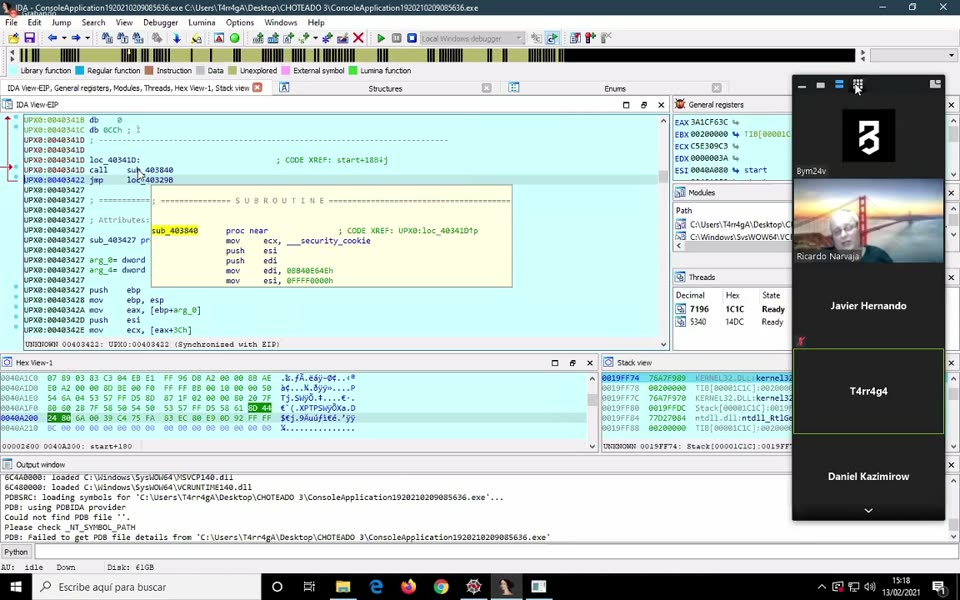
Adentro, IDA detecta que el entry point no está en la zona, o después ya no me va bien todo, no sé por lo que es. Sí, porque ya te lo está convirtiendo a código. Sí, sí. Lo puedes hacer analisis, si le pones analisis te lo va a reanalizar. Sí, pues todas las veces que lo hacía así, que volvía, aunque le dé a reanalisis me hacía cosas raras. Bueno, es que en esto he choteado. Tiene que estar tan choteado que si no, no queda bien. Sí, sí, sí, me ha hecho muchas cosas raras. Yo también entro así al alcohol y vuelvo y ya como que queda más estable, ¿no es cierto? Pues nada, para hacer un poco visible la IAT, pues hacemos lo que nos explicaste en el último vídeo. Entro al CAL que tenga el OFF para que sea una función del sistema. A ver. Ahí empieza, 40, 50. Ya os digo, es que en Mac el que conecta es un ratón externo, va justo al revés y me hago la pisa un lío. Vale, pues voy para abajo, sí. Vamos a ver aquí que sincronice. Así vas viendo dónde termina. Ya os digo, me hago la pisa un lío con la ruleta de ratón. A ver, creo que era aquí. Ahí sí. Ah, no, más abajo. Más abajo. Creo que era 1,6. Sigue, sigue, sigue ahí. Justo venían las... Ahí, ahí ya te pasaste. Ahí, 1,6, 1,60, 64. Lo que no sé si le he dado a... Sí, sí, está bien, está bien, está bien. Ah, al primero. Al primero. Y ahora cuando hagas a Rey te va a dar cuenta, te sale uno o te sale cuatro. O sea, cuando llegaste al final y... Bueno, vuelvo. No, pues estaba, estaba, estaba, estaba. Está, está. Sí, está. Vale, pues volvemos. Perdón por el... No hay apuro. Acá está montado entre amigos. La cuestión es practicar entre nosotros. Sí, sí. Ya te digo, en el último he estado más nervioso, pero aquí más o menos ya lo voy llevando bien. Ya lo vas llevando mejor. Vale, a Rey está a cuatro, como vemos. Vamos, destino que hace a Rey.
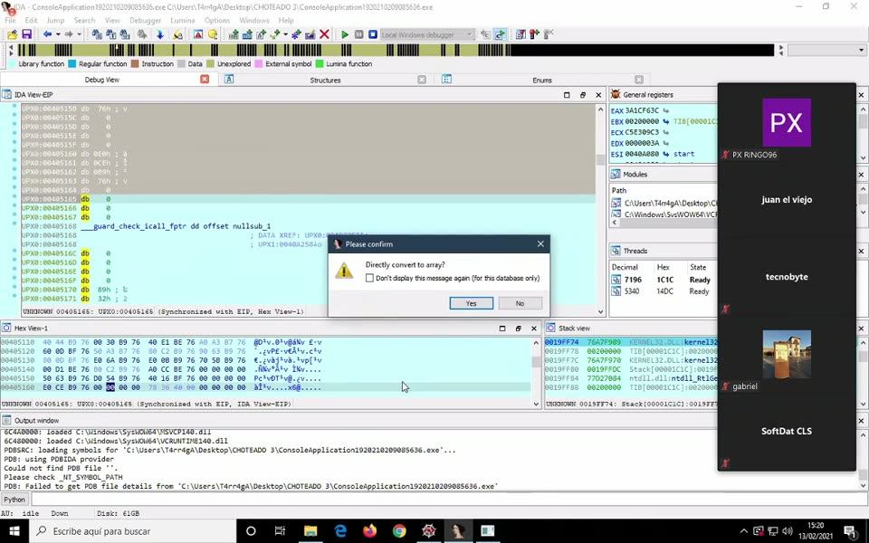
Vamos. Ahí ya está la IAT. Vale, vamos a darle a... The mangler names. Un poco más amigables. Y vale, voy para arriba otra vez. Me pongo en el primero. Pulso. No, pusiste alt. Tienes que apretar en el primero. En el cuatro, pero arriba. Ahí. Al L, al L. Ahí para abajo. Ahí para abajo. Lo más lindo que esto, uno dice, pero esto no está en ningún lado, te digo. En serio, te pasaste. No he pasado. Esto no está en ningún lado. Estas técnicas así de arreglar las cosas y todo, vos no las vas a encontrar en ningún lado. Son cosas de experiencia que uno las va sacando con los años, pero no está explicado en ningún lado, ni en ningún lado. Sí, sí, sí. Yo no las he visto en ningún otro sitio, la verdad. Son cosas de experiencia que uno de tanto pelear al final se termina sacando las cosas. Ahí te quedó la idea reparada ya. Va, no reparada, no reparada. Cosméticamente bien, digamos. Sí, cosméticamente bien. Alt L. Vale. Si vuelves para atrás, lo vas a ver. Vuelvo para atrás. A ver si... Ahí está, a ver que quedan bien. Ahí quedan bien. En vez de off y todo eso que quedaba horrible, ahora salen bien con los nombres como corresponde. Sí, vale. Pues... Pues a ver si me acuerdo dónde iba. Vale, pues ahora le hago un memory snapshot. Sí. Creo que era así. Y me voy a Paro el de Google. Y ya tenemos todas las funciones aquí. Le cargo los símbolos. Escritorio... Seguido 3... Vale. Y el de manglet name me parece que me lo mantenía. Sí, sí, porque estaba... Pero vamos, lo vuelvo a mirar. Sí, sí, sí. Vale. Me voy al main. Podría haber mirado las stream al principio, pero... Vamos, no lo creemos. Y guardo... Ahí se ve lo roto, ahí se ve lo roto que está.
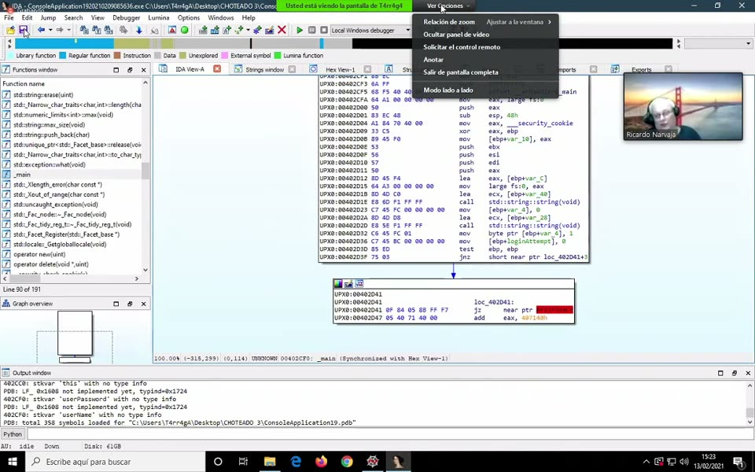
Sí, sí. Guardo la database. Sí. Porque después voy a hacer varias pruebas, entonces, por ir manteniéndome desde aquí. Vale. Pongo un breakpoint al principio, porque voy a trasear en un principio, porque por aquí veo que está roto. Ojo, ojo, si arrancás de vuelta el debugger, te va a pisar lo que tenés guardado. O sea, yo lo que... ¿Cómo haces para que no te pise lo que está guardado? El debugger al arrancar, cuando usás el debugger normal. Si vos vas hasta el main, te va a pisar todo lo que está guardado. Ahora. Creo que no. O sea, me funciona. Bueno, yo lo voy haciendo y ahora me va a decir todo. Hace una cosa. Por si acaso, por si acaso, guarda. Andando, dice Phile, vamos a hacer por si acaso. Así podés volver atrás. Andando, dice Phile, take memory snapshot. Entonces, por si acaso, take memory snapshot, take database snapshot ahí. Entonces, guarda ese snapshot, cualquier cosa, si te lo pisa, volvés a ese atrás. Se puede volver a ese snapshot. Te guarda todo como está hasta este momento. Yo lo que hacía era recuperar, o sea, salir y recuperar lo que es la base. Ah, bueno, sí, sí, sí. Volvés a la database porque no la guardás. Cuando corres no la guardás. Pero es lo mismo, podés ir de vuelta a database snapshot, también es lo mismo. Sí. Vale, pues, bueno, voy a habilitar para que se vean los... Vale, una vez que estoy aquí, un breakpoint normal no me funciona. No sé si será solo a mí. Tengo que hacerlos todos. Y sí, no te funciona porque se pisa. El breakpoint normal es un CC. Es cambiar el código. Y como el código cuando arranca se zorea y se vuelve a guardar, ahí no te va a funcionar nunca. Vale, pues, eso ha llegado a base de golpe. Tiene que ser un hardware breakpoint. Un breakpoint normal es cambiar el código. Como el mismo Packer vuelve a escribir ahí, te lo vuelve a pisar el breakpoint. Sí, pues nada, hardware en ejecución, enable tracing y ok. Y nada, pues le damos CPU, como se suele decir. Me pide... Vale, ha saltado el anterior breakpoint. Ahora que me acuerde de quitarlo. Está, ya empezó a trasear. Sí, y nos pide un nombre. Meto Pepe, por ejemplo. Nos pide una password. 98, 98, 98. Y nos vuelve a pedir nombre. Nos vuelve a pedir password. Bueno, vale. Para lo que quiero, ya me valdría.
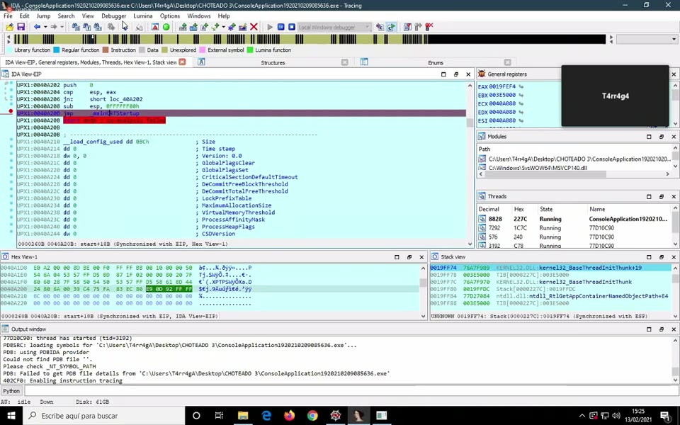
Paro el debugger. Y vale, pues, me pongo a mirar por donde ha pasado. Vale, veo que una vez cargado este salto, esto es un choteo, como se suele decir. Y, pero no me enteraba prácticamente de nada. O sea, yo veía el salto. Ves que hay partes amarillas por donde pasó. Sí, sí, sí, por donde pasó. Vale, lo que hice aquí fue quitar este breakpoint. Puedes usar el replayer también, el 3 replayer e ir traseando para ver cómo se va arreglando también. Te guarda el 3 replayer, te permite volver a pasar por los lugares esos. Sí. Esto luego lo voy asimilando. Todo lo que me vas diciendo cuando nos juntamos, luego lo voy asimilando. O sea, como el 3 replayer es un debugger que te baguea las instrucciones que tiene guardadas, así esas amarillas. Entonces vos lo pones y lo que va a hacer es ir pasando por las instrucciones amarillas. Sí, ir pasando por las instrucciones sin ejecutarlas, digamos. O sea, te va mostrando el proceso. Te va mostrando, te va mostrando qué va haciendo. Pues aquí puse otro breakpoint, pero este sí que me parara para ver lo que hacía aquí. Y voy a quitar el otro breakpoint. A ver, breakpoint. Y el principio para desempaquitar lo quito. Vale. Y nada, me meto otra vez. Vale. Una vez que llegamos aquí, voy a ver lo que va haciendo. A ver, F8. Creo que le voy a tener que ir dando. Porque en este ordenador... Debuggen, debuggen, debuggen. So, igual. Es que en este ordenador no me funciona bien. A ver, el F8, ¿cuál de estos es? ¿Cuál de estos iconos? No, ese no. El segundo, el que pone solo una flecha. La flecha verde. No. Ese, ¿no? Sí, ese sería el... Ah, ahí está. Ese es F8. Este es F8. Vale. Me dice que se ha encontrado un... Bueno, que EIP ha accedido a una dirección que no tiene instrucciones. Le doy a que sí. Y lo que me di cuenta es que me reparaba ese código. O sea, se saltaba 3 bytes y lo siguiente me lo había reparado.
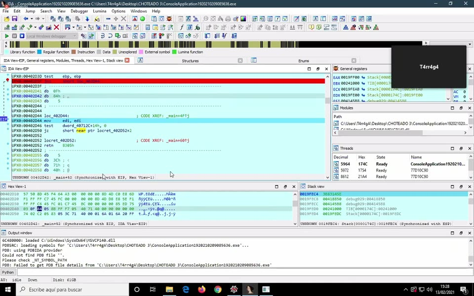
O sea, aquí vemos que está todo hecho una basura. Y nada. Pues veo que se salta 2 bytes y me salta aquí, al mob edit, edit. Vale. Sigo dándole. Hay otro salto. Un JZ en la anterior era JNZ. Hay otro JZ. Me dice lo mismo. Y me lo ha reparado también. Digo, pues vale. Pues vamos para adelante. Aquí se salta 2 bytes. Y sigo para adelante. Vale. Pues voy dándole. Otra vez igual. Y sigue saltándome. Ese era de 3. Este es de 2. También me iba dando cuenta... A ver si en el siguiente lo... A ver, lo veo aquí. También me iba dando cuenta de que cuando había un JZ... Esto lo vi después, pero bueno. Hace un test con una variable que después no utiliza. Siempre hace un test a cero. Y se supone que utiliza ese para el JZ. Vale. Pues le fui dando para adelante, le fui dando para adelante, le fui dando para adelante. Vale. Qué maldito el que hizo esta porquería. Sí, sí. Desde luego, trabajo da. A ver, admitir que no me he dado cuenta. Vale, pues... Una vez que... Bueno, vamos a llegar un poco más adelante. Que se vea un poco en el gráfico. Y guardándole para adelante. Y en una de estas, ya cansado, cojo... Y le digo, pues vale, termina el proceso. Y me voy al gráfico. Y veo... Que ya se veía mucho aparte del código. Se arregla un poco. Se va arreglando un poco. Y ya me fijé que los... O sea, vos de esta forma lo que estás haciendo es... Lo que yo hago con el 3R Player, que lo voy traceando y lo voy nopeando y arreglando, vos lo vas arreglando al tracearlo. Y el mismo IDA te dice que es código y lo va arreglando. Sí, sí, sí. Después sí que lo fui nopeándolo. Pero digo, vale, ya tenía más o menos una idea. La primera es una pequeña basurilla de cómo lo arreglé. Pero ya tenía más o menos una idea de arreglarlo. Pues digo, vale, pues me voy al Spader. Y a ver, choteado, 3, 2...
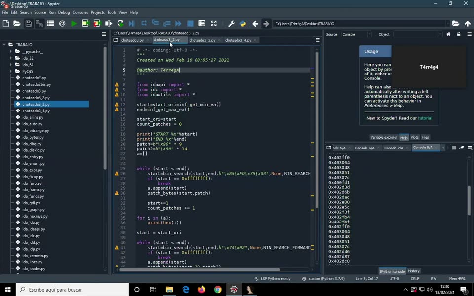
La primera versión. Y hago una primera versión, que solo me quite la basura después de los saltos. Mantengo los saltos. Mantengo el 7404, el JZ. Mantengo el 7503. Y le meto 3 bytes después. O sea, empiezo a parchear 2 bytes después de lo que busco. Entonces, solo parcheo la basura. Y, a ver, con el tal. Solo hay uno, o sea, creo que debe ser este. Lo ejecuto. Y vale, me da que ha parcheado 25. Se puede decir que ha metido 25 parches. Me voy aquí. Y ya, más o menos, lo voy viendo. O sea, veo dónde está el salto. Veo dónde está el JZ. Y veo lo que salta. Vale. Pues ya, así más o menos, me hice una idea. Pero lo que vi también es que estaba, por ejemplo, el TSBP-EBP. Que esto no hace nada. Luego veía por aquí un mob-eddy-a-eddy. Que tampoco hace nada. Y digo, ¿y por qué no me salto el TSBP-EBP? ¿Por qué no me salto el JZ? Y si funciona, pues oye, ha funcionado. Por qué no me salto el TSBP-EBP a esta variable que, a base de darle vuelta, vi que no hacía nada. Digo, vale, pues a base de hacer pruebas. Lo único que sí tiene es ese ADD. Ese ADD ahí sí hace algo. Ese ADD que está ahí. Sí. Bueno, ese sí que no me lo cargué. El ADD de Word 4071-13,1. Ese sí. Ese me dio muchos problemillas. Vale, pues para ejecutar, ¿cómo decías que se cargaba el snapshot? No, tenés que ir a... No, de ahí se guarda. Tenés que ir a Vue. Creo que es Vue, a ver. A ver, el menú. Database Snapshot Manager, Database Snapshot Manager, y ahí están los que están guardados. Anda ahí, te dice Restore. Te va a restorear como estaba en ese momento. Vale, perfecto. Pues aquí me pasa una cosa. Resulta que si yo paso el script de Ida cuando no estoy dentro del debugger, me lo repara aquí en esta pantalla, pero luego me voy al debugger y está todo hecho un desastre. Vamos, no hay por dónde cogerlo. Vale, pues para que me mantenga en un sitio y en otro, me tengo que meter al debugger.
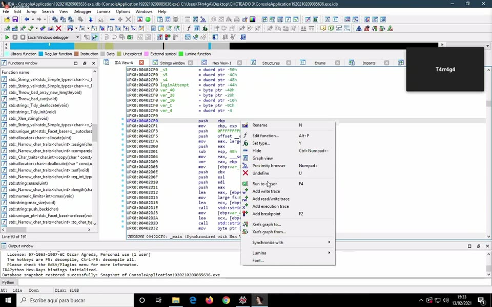
Pues meto un breakpoint aquí, un breakpoint hardware. Joder, espérate, breakpoint. Add breakpoint. Edit breakpoint. Hardware. MScute. Vale, ok. Me meto dentro. Me para. Vale, y me voy a ejecutar el script. Este fue el primero. Este creo que era el segundo. Lo explico en este. Este llegó a funcionarme, pero en esta versión. O sea, ayer tuve muchísimos problemas con todo esto. No pude instalar el Ida Python, etcétera, etcétera, etcétera. Ojo que ahí tenés un, viste, cuando vos decís infget min EA, no sé si estando en el debugger te conviene eso, porque lo que hace eso es que busca en todos los EA posibles de todos los módulos. Quizás te conviene mejor min SEG, viste, o sea, hay uno que es, no me acuerdo si es min SEG o qué sé yo, que te da el mínimo de ese segmento solo. El ejecutable. El ejecutable, el código. Sí. Eso es otra de las cosas que me pasa. Si ejecuto el primer script que he enseñado antes, claro, me da que se ha parcheado como 2.000 o 3.000 posiciones de memoria. Claro, porque está buscando en todas las cosas que nada que ver. Tiene que ponerles, en ese caso hay que cambiar el min EA por SEG, min, no sé cuál hay una que está por ahí. Sí. Bueno, ahora me voy a tener 3 o 4 minutos mientras lo hace. Al final he cogido y para el primer JNZ busco lo primero, que es el TSBP-EBP, sería 85ED. Busco el salto y después parcheo las 9 posiciones siguientes. Me cargo el ED y demás. Este es el script final. Y luego, en el otro JZ, me cargo el test a esa variable que he dicho antes que testeaba con 0, antes del salto, y el salto. El 7404 es el salto y luego la instrucción de antes ocupa una porra de bytes, que sería esta. Y parcheo 14 posiciones en esa. Y en la primera serían 9. Vale. A ver, console. Supongo que sea la misma, pero por si acaso. Vale. Y le da ahí para adelante. A ver si está fallando. Ah, porque no. Tenés que cerrar todas las otras consolas. Por ahí ves que dice close over console, ¿no?
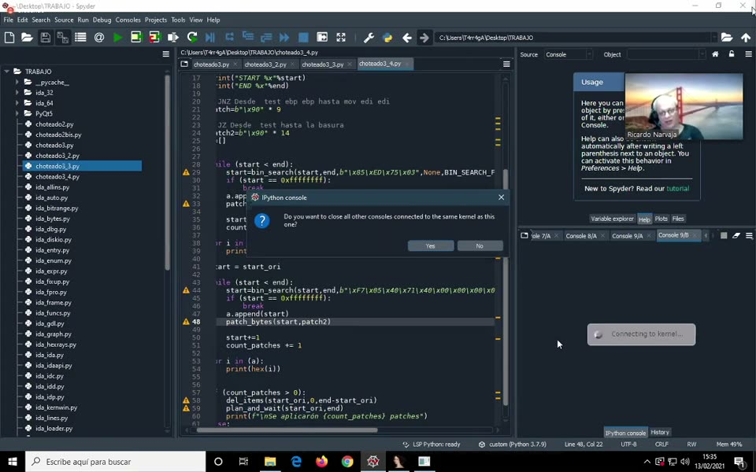
Esa, dispone yes. Porque hay muchas consolas que están conectadas al mismo. Cerrá todas y vuélvelo a conectar. Como están todas conectadas al mismo, ¿viste? Por ahí se te empieza a trochar todo. A ver si me va a dejar de cerrarlas. Sí, te la va a dejar una por una. Esta también. Esta también. Esta la cierro también. ¿Se conectará la última o...? Sí, sí, sí, sí. Pone elegía. No, si no, vuelve, vuelve, vuelve a poner. O sea, vuelve a poner, pero ahí va a quedar una sola, ¿viste? Porque si no, tenés un montón ahí que... Sí. Ahí está. Esa. Algo pasa. Ah, porque al cerrar, cerraste el Ida Python. No, dejálo, abrílo. Eso, déjalo así. Anda ahí, poné punto, abrí el Ida Python en Ida. Eso, déjalo así. Ahora, cuando pongas allí punto, arranca. Abrí la del Ida Python. Sí, o Edit Ida Python. Blue In Ida Python. Y PIDA. Cuando hagas eso, el otro va a arrancar. Vas a ver. Ahora va a andar el otro y vas a ver que empezó a arrancar. Ahora volvé. Ahí arrancó. Vale, se supone que debería de funcionar. Ahora tíralo de vuelta. Vale. Tiro el Ida. Ahí va. Tiene que estar funcionando. Ahí está. Bueno, está analizando. Se queda analizando. Tarda un buen rato. Aquí, es lo que os digo. O sea, a mí llegó a funcionarme un script en otro Windows. Este Windows que estoy utilizando no es una versión de... Se lo he dicho antes a Ricardo. Es una versión de... Igual ves que te das cuenta que está analizando el rango. Un rango mucho más grande. Porque vos estás trabajando. Sí, eso sí que me he dado cuenta. Ese es un problema. Por eso tarda mucho. Analiza todo el rango de memoria de usuarios. Por eso. Porque vos tenés que cambiar. Le tenés que cambiar eso donde pusiste get, min, ea. Porque yo lo hice cuando estaba fuera del debugger. Cuando está dentro del debugger tenés que usar min seg. A ver cómo era. Espera que lo busco. Sí, de todas formas tarda unos dos o tres minutos. Mientras cuento lo que... O sea, en Windows de evaluación, o sea, en este Windows, tuve muchísimos problemas para instalar el LIDA Python porque me da errores de certificado. Y además, este script, o sea, funcionaba de perlas antes de instalarlo en esta máquina.
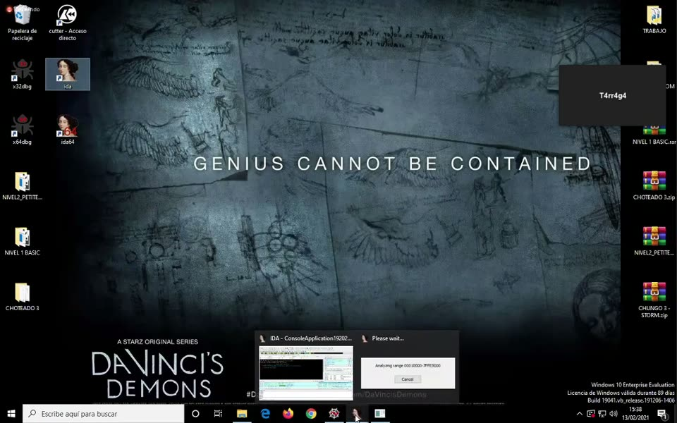
Lo instalé en esta máquina y al hacer esto en todo el rango de memoria, que luego lo cambiaré por la función que dice Ricardo, me aparecían como mil o dos mil coincidencias. Claro, porque estás buscando en todo la memoria. Por eso ese es el problema. Vos lo que tenés que hacer es cambiar la función. Que empiece y busque solamente... O sea, ahora te voy a esperar que lo busco porque yo no me acuerdo de memoria. Pero ese es el Get Mean Seg, algo así, no me acuerdo bien. Sí, creo que en uno de los... No sé si en el Choteado 1 o en el 2, en tu skill, no utilizaba las mismas funciones. En el skill mío yo usé Get Segment Start y Get Segment End. Sí, esa es una. Get Segment Start y Get Segment End. Sí, esa creo que es. Yo no me acordaba bien el nombre, pero por ahí anda. Vale, pues debe de faltarle ya muy poco. Sí, pero así es lo que va a hacer que te va a estar parchando la DLL y te va a hacer un lío. No, pero al buscar un rango tan grande de bytes, o sea, he buscado el JZ o el JNZ y luego en una de ellas como 10 bytes anteriores. O sea, me va a encontrar una... Me encuentro una coincidencia menos que en el escrite antes. O sea, esto sí que lo he probado y funcionar funciona. Como suelen decir en el amor y en la guerra, todo vale. O sea, a mí este me iba a funcionar. Sí, sí, sí, está bien, está bien. A ver si acaba. A ver si acaban. Dando otras variantes que siempre son importantes, es bueno saber. ¿Dónde está Zoom? Como veis, en el JZ busco una porrada de bytes. Ahí está, mirá. En el chat, ahí puse, ves, get segment start y GIA o podés poner cualquier dirección de la sección que vos querés que te dé el start y el end de esa sección. Yo puse GIA por poner, ¿viste? Pero puede ser cualquiera, cualquier, ese GIA puede ser el main, puede ser cualquier dirección. Sí, sí, sí. Que sea de esa sección. O sea, vos le pones cualquier dirección y te va a dar cuál es el segment start y el segment end. O sea, get segment start y get segment end. Entonces, con eso te va a buscar solamente en esa sección y va a ser mucho más rápido. Vale, sí, debe de acabar ya. Es para enseñarlo más o menos como yo lo tenía preparado. Sí, sí, pero fíjate que está buscando las DLL, todo por eso. Sí, sí, sí, busca todo en los dos gigas. Si lo parás, le cambias esas dos instrucciones, te tarda 10 segundos.
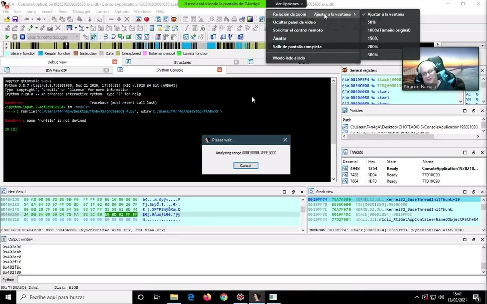
O un minuto, medio de 30 segundos. Vas a ver. Faltará muy poco. Yo lo pararía, le cambiaría y lo volví a tirar, si va a ser mucho más rápido. A ver, vale, vamos. Fíjate las instrucciones donde busca el min y el max. Acabado o no? Vale. Sería. Donde busca el inicio. Ahí es. Pone start. Fíjate la que yo te pasé. A ver si lo tengo. No lo tengo en el mismo pantalla. ¿En qué grupo? Get segment. Get en el chat. Ahí en el chat. El chat es que no lo veo. O sea, me estoy haciendo un live aquí con... Get S-E-G-M guión start. Get guión bajo. No te lo paso a canal latino. Get guión bajo. S-E-G-M. No, S-E-G-M. S-E-G-M. Guión bajo start. Y entre paréntesis, si querés ponés GIA. Entre paréntesis ponés GIA. Entre paréntesis ponés GIA y paréntesis, paréntesis. GIA con H. GIA y paréntesis, paréntesis. Ahí está. Vale. Y en el otro ponés Get S-E-G-M-E-M-E-M-E-M-E-M-E-M-E-M-E-M-E-M-E-M-E-M-E. End. Y ponés lo mismo GIA. ¿Y por qué tiene start igual a start or y dos igual ahí? Eso es medio raro. Porque busco dos veces. Entonces guardo el start. Va, está bien, está bien. Le doy una vuelta para buscar el JNZ y después le doy otra vuelta. Bueno, volvé a restaurar el snapshot porque si no te va a quedar. Vale. O sea, ya estaba medio. A ver, view, database. Sí, el resto. Y volvé a arrancar el IDA Python. Vale, volvemos a arrancar. Ahí está. Vale, y arranco otra vez el... Si no, a mí no me funcionaba. Yo creo que eso de arrancar el debug era porque vos estabas tomando toda la... Puede ser. Si no te va a pasar.
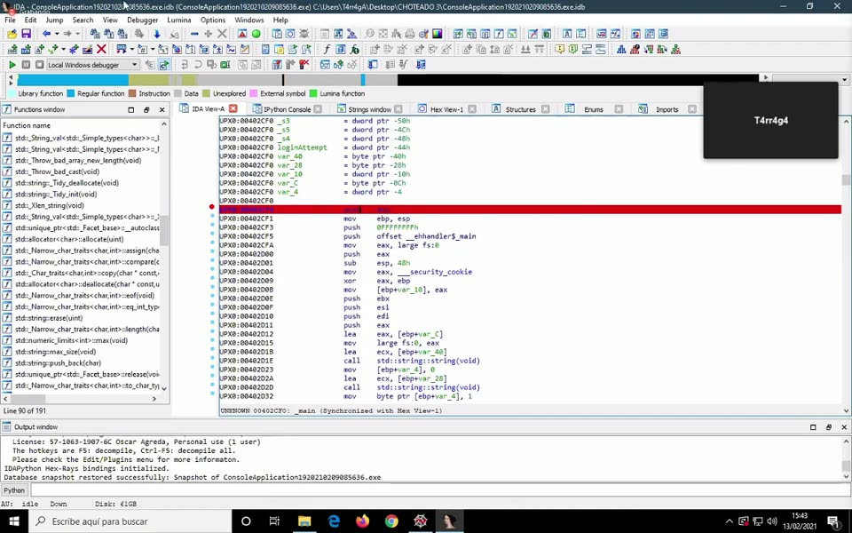
Si lo tirás así me parece que te va a funcionar. O sea... A ver, vale. Vale, vale. Es que todo este... Suprimir. Lo conectamos. Lo quedamos ahí. Lo conecto a la consola. Vamos a cerrar esta. Y esta puede ser. Bueno. Lo conectamos a la consola. Guardar los cambios. Guardar los cambios. Guardar los cambios. Ahí está. A ver ahora. Tiramos. Ahora vas a ver de dónde dice analizando. A ver si analiza solamente. No me tira. No. ¿Ya terminó? Sí. No, pero no me ha... O sí, 23 patches. Me da uno menos. Esta vez me da uno menos incluso. Bueno, pero fíjate lo rápido que fue. Nada que ver. Me hacía... Me seguía haciendo cosas... Me hacía cosas raras. Vamos a ver si... Vamos a ver si lo he arreglado. A ver si termino el proceso. Tengo que tomar otro... No, no. Guardá. Guardá ya donde dice save. ¿Viste? Donde guarda el... O podés guardar. Donde dice save. Donde guarda el archivo. Donde está el disquito arriba. No, no termines. No termines antes. Antes guarda ahí. Aquí. Guardá en el snapshot. Donde está el disquito. ¿Aquí? Sí, sí. Guarda ahí. Vale. Ahora paralo. A ver. Vale, vamos a ver. Vale, sí. Sí lo he hecho. Vale, pues... Pues nada. Así me... Es como lo dejé yo al final. Pero viste que poniéndole solamente esos segmentos te queda bien. Sí, sí, sí. Porque no estás toqueteando la DLL. Sí, sí. Y era lo que me iba quedando. Pero ya te digo. Ayer le intenté dejar una máquina para poder... Si quería hacer algo hoy. Poder hacerlo. Y ya no seguir toqueteándole. Explico un poco el funcionamiento. Bueno, una vez que ya está reparado. Pues explicar un poco el funcionamiento al principio. Es igual que el choteado 2. Comienzo a hacer unas historias con unas streams. Y llegamos a lo que es el bucle igual que el choteado 2. O sea, aquí... Voy a ponerle... A ver, le cambiando. Esto sé que es un contador. Que espera hasta cinco pasadas. Y pide el nombre.
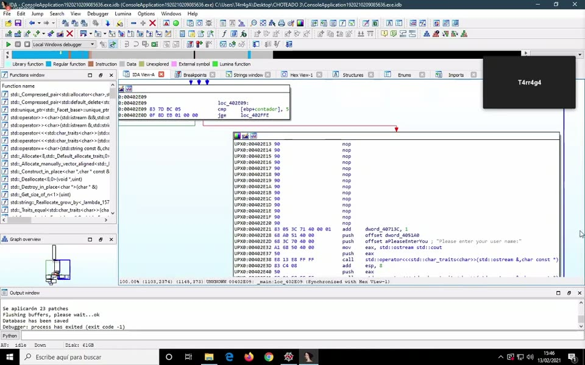
Y la password. Y la password. Que ya lo hemos visto antes. Nombre. Y la password. Vale. Y por entre... Tanto aquí como arriba, cuando hace las historias con las streams, me va incrementando esta variable. La 40, 713, sí. Yo esas cosas... Siempre cuando hago el trabajo, cuando no es para mi trabajo, le pongo variable puta. Le pongo esas cosas, ¿viste? Variable de mierda. Le puse variable cabrona, pero... Claro, siempre esas cosas. Ahora ya prefiero... Ahora ya que estoy... Cuando es para el trabajo, no. Le pongo variable dudosa, qué sé yo. Así personal, le pongo variable de mierda, variable chota. Al final ya empecé por cabrona y al final ya no sé lo que le puse. Aquí lo aumenta en dos. Aquí le resta uno. Lo más lindo es que eso está dentro del código que, digamos, que ofusca. O sea, que si uno lo parchea, también lo afecta, digamos. O sea, siempre hay que respetarlo. Sí. Vale. Y aquí veo que utiliza el método igual, igual para comprobar el mename con una variable. Val48, que es un buffer que crea al principio, cuando estamos en el bloque del principio. Vale, pues por lo tanto, me voy a poner un breakpoint por aquí, para después, una vez que ya sepa más o menos de lo que va el tema, pues me pongo a ver qué valen esas variables. Supongo que mirando el código del principio, pues acabaría llegando, pero por hacerlo un poco rápido. Vale, compruebo el nombre. Si es bueno, hay un salto a comprobar la password. Compruebo la password con otra variable. ¿Es parecido al chateado de esa parte? Sí, sí, es muy parecido. Es casi idéntico. Esta parte, por lo menos. Igual, lo mismo. Y llegamos a una zona que... ¡Uf! ¡Qué problema! Comparo con la variable 40703dc con 4. Vale. Si esa variable va bien, o sea, si es 4, pues paso este bloque de código y en este bloque de código me compara con contador, que es este contador del principio.
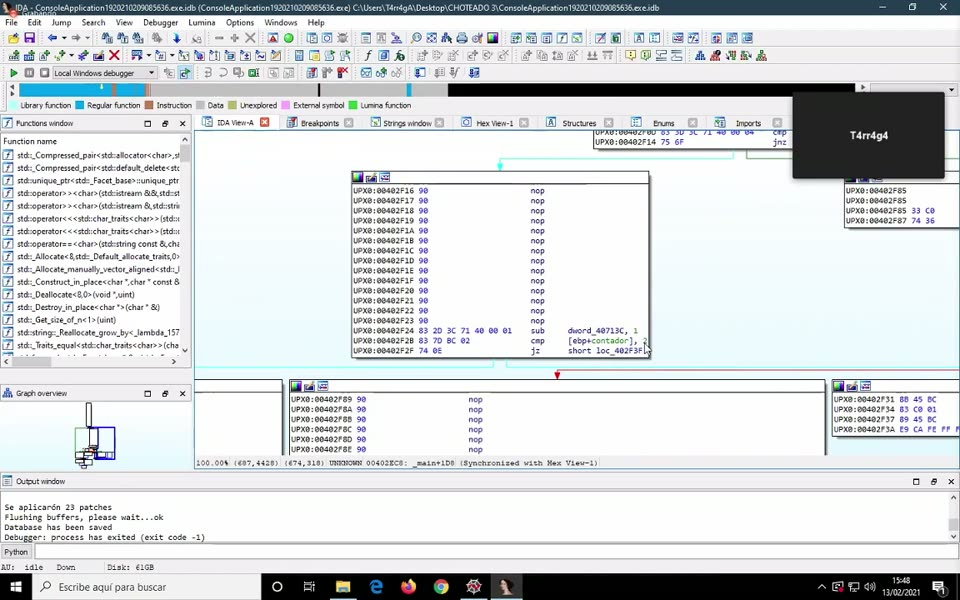
Vale, compara con un 2. Por lo tanto, tengo que dar, si empieza desde 0, creo que son 3 puertas. Vale, y llegamos aquí, a un welcome que este no es... no salta desde aquí. Llegaríamos aquí si es bueno. Nada. Esta otra variable que creo que no estaba... que no está inicializada tampoco. Que la inicializa al principio. Y si no, pues nos vamos para acá. Bueno, vamos a ir desde el chico malo de aquí. Aumenta el contador. Y nos vamos... vi que nos íbamos al principio. Al bucle del principio. Vale, he ido un poco rápido, pero porque... Sí, ya es más o menos parecido. Parecido como el otro. Pues cogí y me fui al... A mi querido debugger. Voy a ver si quedan tres puentes por ahí. Creo que el que quiero es el de abajo. Elimino este. ¿Sabes? Vale, así. Y le doy... Lo ejecuto. Vale. Me pide un nombre. Metemos Pepe. Me pide un... Serial, una pargo. 98, 98, 98. 98. Y algo no se ha ejecutado del... Del breakpoint. Sí, porque ojo que los breakpoint tienen que ser hardware. Fíjate si no le pusiste... Si le pusiste que es hardware. Seguramente. Tiene que ser hardware, porque si no, no te lo va... Bueno, pero esa es la primera pasada. Fíjate que había varias pasadas. Si ya era... Debería de... O sea, era justo en... Después de pedir la... Ah. No, pero ¿sabes qué puede pasar? ¿Sabes qué puede pasar también? Ojo. Esto a veces pasa. No te olvides que vos cuando estás ejecutando el código original, ese breakpoint puede estar en el medio de algo que realmente se nopió. Entonces vos ahí estás ejecutando el código original. Tenés que poner los breakpoints en instrucciones reales, porque ahí el... Vos no lo parchaste, el original. Sí, sí, sí. Vos lo que estás haciendo, eso está metido dentro de un call que está nopiado y entonces por ahí no pasa realmente por ahí. Entonces mejor pónelo ahí. Lo voy a poner en esta. Claro, si no, no te va a parar, porque vos estás... O sea, en el código original no hay ningún nop. Está el código como era original. Sí, sí, sí. Entonces vos le pones el breakpoint por ahí y resulta que cuando arranca, resulta que no pasó por ahí al final. Salteó, es uno de los que saltea, uno de las instituciones que saltea y entonces
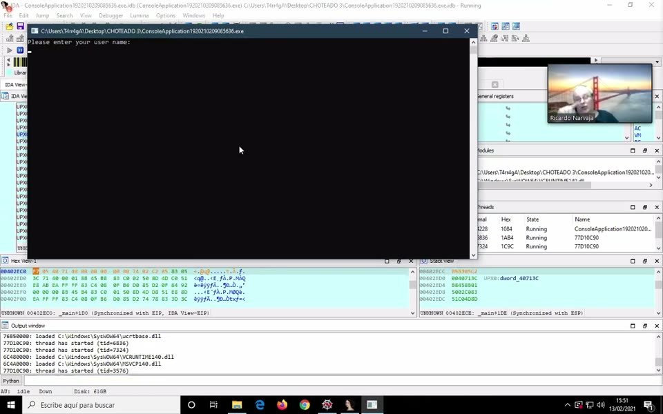
no para. Vale, pues vuelvo a ponerlo aquí y vale, ahora sí. Eso hay que tener en cuenta, que acá estás como en dos mundos, vos estás trabajando como en dos mundos a la vez. La realidad es los bikes que no están parchados y lo que estás mirando ahí que es otra cosa. Que los noventa no están en el ejecutable original. Claro, claro. Marchamos. Vale, pues voy pasando. Vale, aquí ya lo hemos jodido. Ya lo hemos jodido. Y el problema cuando vos estás usando el debugger es que es posible que lo rompa cada vez que lo usas el debugger. Pero bueno, igual podés usar el script de vuelta, también de vuelta, ¿no? O sea, si paras ahí podés volver a usar el script. Funcionaría, volviéndolo a hacer desde aquí. Cuando para ahí le podés volver a tirar el script, se vuelve a arreglar. Todo eso se evita si uno lo hace estático, ¿no? Pero bueno, a veces pasa que uno se necesita. Sí, pero bueno, quería pasarle. Tirale de vuelta el script. Volvió a arrancar el IdaPyton y total el script es cortito, rápido. Sí. Ahora. A ver, plugins, IdaPyton. Supongo que estará el mismo que en el de antes, ¿no? Si no lo conectas de vuelta porque si no, bueno, te va a tirar problema con el anterior. Está bien, está bien, está bien. A ver. Vale. No, cuando pasa eso es porque está en el anterior, quedó enganchado con el anterior. Va a tener eso un montón ahí, tenés que cerrar todo. Vale, ¿cierro el programa o cierro solo los...? No, no, cerrá, cerrá las consolas. Claro, y ahora abrí una, ahora abrí una de vuelta. Deja eso. Porque ya tenías una enganchada, entonces... Sí. Cuando pasa eso es porque hay una enganchada. Ahí está. Ahora. Lo vuelvo a ejecutar. Ahora sí, ¿ves? Vale, ahora sí. Es rápido. Sí, sí. Vale, pues... Ahí están los nobs, todos, ¿viste? Entonces, ahora lo ves. Sí. En cualquier momento lo podés tirar el script. Lo que pasa es que al hacerlo así rapidito, entonces uno en cualquier momento lo vuelve a tirar y se vuelve a acomodar. Vale, pues... Si llego prácticamente por aquí ya, puedo ver lo que vale la variable 48. Que... Pues algo no va. 35, 92. No, pero algo no debe ir.
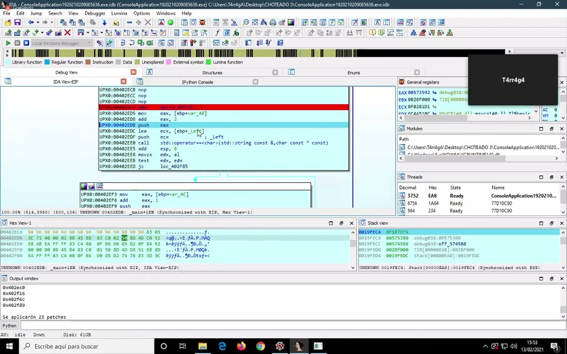
Algo no va como yo... Como yo lo tenía. Sí, pero esta variable... También puede ver la variable esa antes saca el valor. Sí, sé que al principio, en el bloque de código del principio, lo saca. O sea, la variable... La primera me parece que era de Ariel y al final es Ariel. Pero se supone que aquí, en esta parte del... Aquí la tendría. Sí, pero... O sea, no sé por qué no... A ver, EAX, hace clic en EAX arriba, donde está la flechita. En EAX, allá donde está el registro EAX. Sí, aquí sí. No sé por qué no... O sea, se supone que aquí me debería de dar la misma información, ¿no? A la hora de... Sí, pero... Vale, pues me vale para lo que estoy hablando. Porque te está dando el puntero. Eso te debe estar dando el puntero. Anda donde apunta Bar 48. Anda donde apunta el otro. Ahí. Anda ahí. Hace doble clic ahí. Y ahora apretá D ahí. Apretá la D. Apretá D. Aquí la D. Sí. Y ahora hace doble clic ahí. No, no, no. Así que se hace una... Así doble clic ahí. Y ahí ya va Ariel, ¿ves? Cero, Dariel. Sí, Dariel. Es un puntero, es el puntero. Lo que pasa es que al sumarle dos, lo que hace es saltear el cero y saltear la D. Y saltear la D y se queda en Ariel. Por eso no se ve. Vale, vale, pues... Hasta incluso... Vale, pues el nombre es Ariel. Sigo por delante. Claro, no me va a saltar la otra, pero sí podemos ver lo que vale haciendo lo mismo, ¿no? Lo mismo. O sea, me vuelvo aquí, aprieto la D. Apretar la D hasta que sea una redirección. Ahí está. Ahora dale doble clic y te va a ir a DUN. Es igual que el otro. El otro también era DUN. A DUN. Vale, sí. Vale, pues ya sé el nombre y el... El nombre y la password. Vale. Pues nada, lo podemos volver a correr. Esto creo que hay una forma de ir para atrás o... Pero vamos, yo siempre meto la gamba en esto. Vale, pues Ariel. DUN.
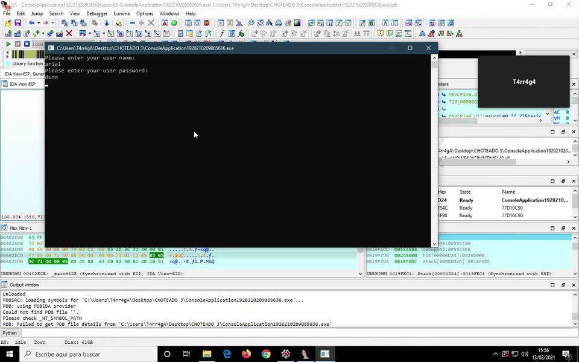
Me paro en el PowerPoint. Voy siguiendo por delante. Seguramente... Este también no me lo ha roto, por lo menos. Veo que es la... El nombre lo ha hecho bien. La password también. Y llego aquí. Y aquí pues... Acá se va a cada parte donde murió el muchachito. Mi problema de siempre. Esto, aquí vale seis. Me vale nueve. Me vale doce. Me vale... Nada. Esa es la parte que murió el muchachito. De la película. Aquí, bueno. Parte lo ha roto. Pero aquí iríamos al contador. Igual que hemos visto antes. Y el contador tiene que ser la tercera pasada. Pues... Pues más o menos hasta aquí esta. Hasta donde llegué. Después de preguntaros muchísimo. Si quiere que lo coja otro o tal. Y haga... Bueno, no le importa. Todo sirve para que después los otros puedan seguir. Por ahí lo pueden seguir la semana que viene. O en otro momento. Ya es una base. Tienen una base para poder continuar. No es necesario que se llegue a toda la solución en cualquier primer momento. ¿Alguien llegó más lejos de eso? Yo podría continuar, pero... Bueno, dale, dale. Continúa, continúa. Acá la cuestión es ayudarse entre todos. Dale, dale, dale. Dale, dale, dale. Vale, pues a ver. ¿Cómo hemos dicho que pasó la pantalla? Y primero... La paso a ti, Ricardo, ¿no? Pero no sé quién es el que está hablando que dijo que... ¿Quién es el? Pero no veo los participantes. ¿Quién era el que dijo que... Ringo. Ah, Ringo. Bueno. Entonces, pasame a mí... Pasale host a él, a Ringo. Sí, directamente pasale... A PX Ringo 96. A PX Ringo 96. Hacelo a make host. Hacelo a anfitrión. Hacer anfitrión. A esto tenemos que acostumbrarnos a trabajar entre todos y a hacerlo así. Casero, ¿viste? Eso sí, no te vaya. Que host que no se vaya porque si no se cae toda la... El zoom. ¿Se supone que ya lo tienes, Ringo? Sí. Ahora podés... Si ya sos el host, podés compartir tu pantalla. Y ahora podés compartir la pantalla. Pero ya esto está bastante bien. Ya hasta acá hicimos bastante. Bueno. Bueno, vos sos un castigo, sí. Sos un castigo, sí. Anda para allá. Fuera. Y Soli, ¿qué pasa que estás tan callado?
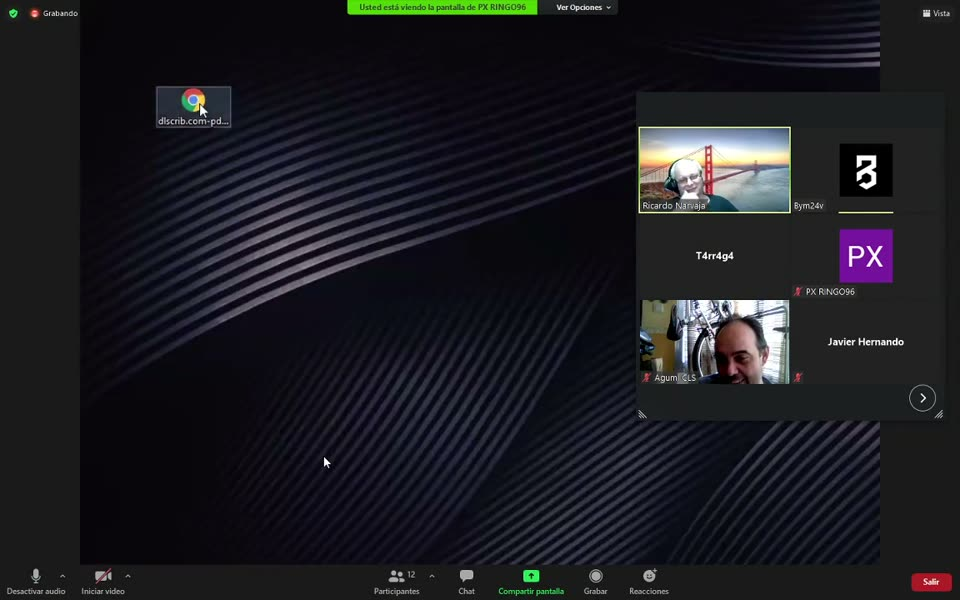
¿Qué pasa ahí? Estoy bien. Estoy prestando atención. Ah, pensé que te habías dormido. No, no, no. Tenés que poner un par de un pacmi para la vez que viene. Porque acá no tenemos ninguno ahora para hacer. Así la vez que viene... En el baúl. Lo del baúl ya lo resolvieron. Lo del baúl, bueno. No sé. Vamos a ver. No, no queda mucho otro baúl aún. Yo puse también un petit, un petit, un pacmi para desempacar. Que también no es tan difícil. Es intermedio también. Así que bueno. Bueno, si no, cuando quieran. Si quieren la próxima, agarramos uno cualquiera y lo hacemos entre todos. Claro, ese petit es un intermedio. No es ni el UPX, ni es el Enigma, qué sé yo. Es algo intermedio. Así que, por ahí la semana que viene lo podemos agarrar entre todos y lo vamos haciendo. Lo vemos. Lo vemos. Perfecto. Te pese un poco lento. Muy bien. Espere que voy a... Ahora vengo. Un minutito. Muy bien. Bueno, ya me saltó... Porque el Zoom lo que tiene es que son 40 minutos de reunión. Y ya me saltó el cartel y ponía que me lo alargaban. O sea, de momento parece que no hay problema. Bueno, el Google Meet, la verdad que también estaba bastante bien. Ahí está, ya se ve la... Sí, ya se ve algo. Creo que son 40 minutos porque es la primera vez que lo haces con el usuario. Sí, es el plan básico, claro. El plan de Free, ¿no? No, sí, no. Quiere decir que te deja más de 40 minutos las primeras veces. La primera o la primera vez. No, pero el Google Meet, hasta ahora las extraoficiales la hacíamos en el Meet y de verdad que iba bastante bien. No teníamos tanto rollo de esto de anfitriones y cosas de esas así. Se ve en pantalla. Sí, sí. Bueno, hasta aquí llegó el compañero. Aquí se ve que compara con cuatro y si vemos las referencias...
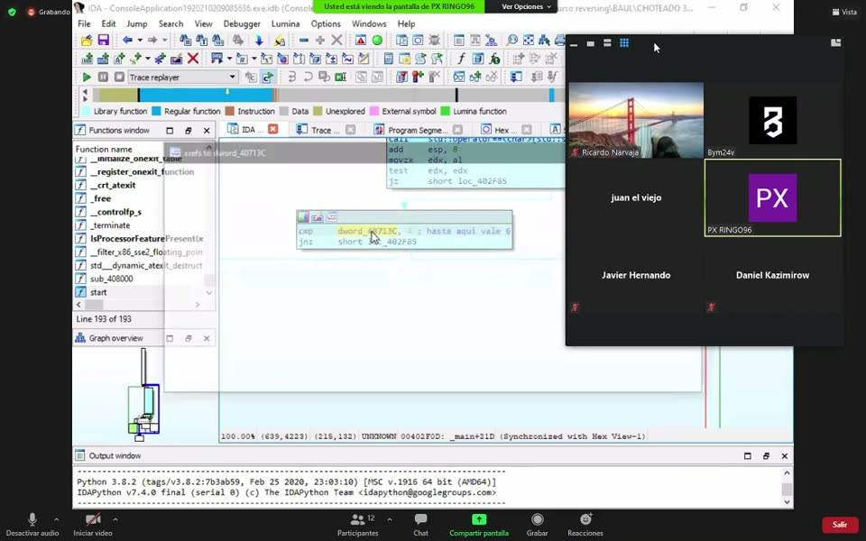
Solamente suma, suma y aquí resta uno y uno. Si vemos aquí la primera, lo empezamos a analizar de arriba. Aquí le suma uno. Luego otro, ya van dos. Hasta incluso este poco... Entonces pasa aquí. Cuatro. Volvimos. Seis. El resta uno, cinco. Seis. Entonces hasta aquí valdría seis. Entonces lo que se me ocurrió es que se podría decrementar aquí más abajo. Depende de los intentos de login. Entonces verifique eso. Y solo decrementaba... Y solo decrementaba... Y solo decrementaba... Está por acá abajo. Aquí. Solo decrementa aquí. Y ahí. Y aquí, pero... Pero no va a decrementar lo suficiente porque aumenta da tres y va decrementando da uno. Entonces la única solución era... Entonces la única solución era... Entonces la única solución era... Entonces la única solución era hacer... Cambiar este valor para que cuando al sumar... Viera... Viera el... El valor correcto. El valor correcto. El valor correcto, exacto. Entonces yo lo que hice... Todo el mundo cuando ve la palabra inline patching se piensa que es una gran cosa. Realmente en UPX el inline patching es meterle una línea de código ahí antes de saltar a los EP, ¿no? Este fue el que hice yo, el patch que hice yo. Que lo que hice fue... Que justo antes de saltar a los EP... Asignaba la variable un menos ocho. Para que cuando sumara... Yo hice los cálculos... Muestro que me hice los cálculos donde es necesario.
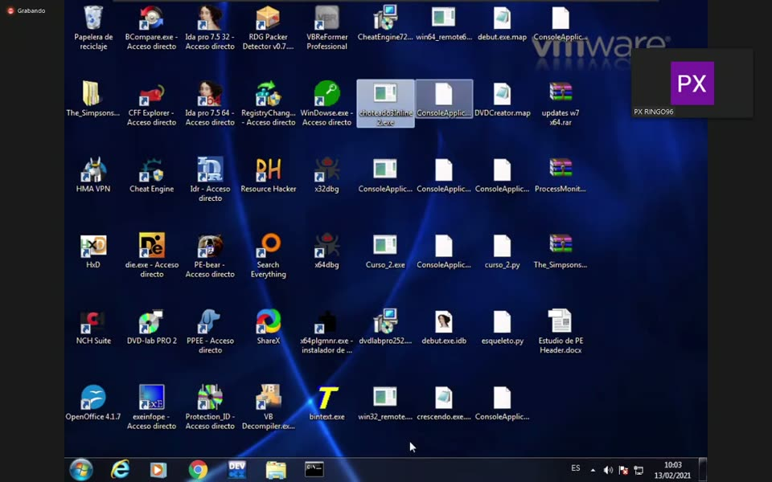
Sí, es... Es un menos ocho. Yo también... Es un... Hay que inicializar la menos ocho. Yo no sé ni quién está hablando. ¿Cómo sé quién habla? No me salen los participantes. ¿Quién habló? Ahora yo, Targa. Ah, listo. Porque claro, antes me salía en la ventana, pero ahora no me sale ninguno. Ah, ahí está, ahí está. Ahora la agrandé de vuelta y me apareció de vuelta. Porque la había minimizado y no me salía quien estaba hablando, ¿viste? Estaba perdido. Y bueno... En el segundo icono, cada vez que habla alguien se pone su nombre. Sí, sí, sí. Se pone su nombre ahí. Sí, sí, sí. Volviste al final. Aquí dice. Sí, sí. Al iniciar le suma tres. Sí, sí, ya estoy por aquí. Y en cada intento le suma tres. Entonces, compara con cuatro. Entonces, ¿cómo? El intento de login debe ser igual a dos. Y empieza en cero. Sería el tercero. Entonces serían los tres iniciales, que serían los tres que le sumó al inicio. Más los tres por tres de cada intento de login. Porque en cada intento de login le suma tres. Entonces tenemos que doce. Para que nos... Para que ese doce nos dé cuatro, necesitamos restarle ocho, que sería este. Este menos ocho. En esa décima. Entonces lo que hice fue... Pushar. Columndum. Ojo, ojo, ojo. Que mirá, me parece que ahí abajo la dirección. Mostrá bien la dirección del adres. Me parece que lo estás poniendo... No en 18, C, F, F, 6, C. Que no se ve bien la columna del adres. Ah, está justo en 6, C. Parecía 60. Está bien, está bien. Listo. Entonces, este sería... En el original sería el salto a lo de P. Yo lo que hice fue que saltara aquí. Guardo los registros. Muevo a X en menos ocho. Y luego guardo ese menos ocho en el... En la... En la variable. En la variable. Y luego ahí sí salta lo de P. Perfecto.
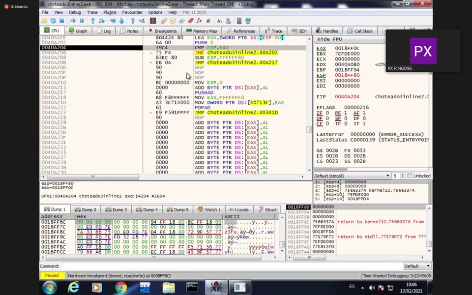
Con eso ya te queda el problema ese solucionado. Sí. Entonces, ya lo que sería que... Ya lo explicó el compañero. Sí, tenés que ponerle un F4. Apretá F4 y hasta ahí. Apretá... Ahí. Dónde está el código tuyo, el PUSHAD. Ponle un F4. F4 está el PUSHAD. Ahí. Listo. Hace un PUSHAD. Menos ocho. Lo guarda ahí en la variable. Menos ocho. Y listo. Salta lo de P. Hasta aquí ya la variable está inicializada con menos ocho. Perfecto. Entonces, si continuamos el análisis acá. Ya este... De aquí. Entonces, al llegar aquí. En el segundo intento, como hicimos los cálculos. Va a valer cuatro. Va a ir por aquí. El segundo intento. Va a ser igual a dos. O sea, el tercer intento. ¿Qué digo? Porque se empieza en cero. Entonces, ya nos va a dar el chico bueno. Ambos los dos. Felicitaciones. Eso lo probamos. Bueno, a ver. Próbelo afuera. Fuera del debager. Felicitaciones a los dos. Gracias. Gracias, Ricardo. Estaban ahí. Los primeros no interesan. Serían... En el tercero sí serían... Ariel. Listo. Muy bien. Lo vencieron. Esto da para que haya un choteado cuatro. Hombre, no esperábamos menos. Tiene que haber un choteado cuatro. Ahora que la comunidad se está volcando bastante en aprender. Pero son divertidos. No van a decir que no son divertidos. Sí, sí, sí. Yo no conocía estas cositas. Iba a decir pruebas. Pero... Ojo, que tener pericia para trabajar así en memoria te da mucho cuando trabajas en cosas que se van automodificando.
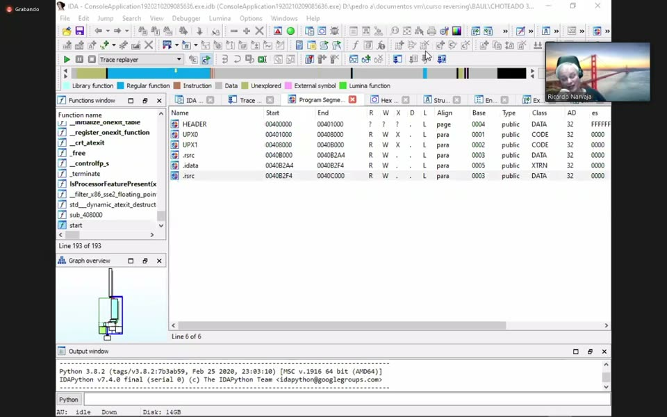
Y tenés que tener la cabeza siempre pensando de que vos estás trabajando en algo que puede ser el código de una cosa y mostrando otra cosa ahí en el database. Y cuando vos tenés esa cabeza y te vas acostumbrando entonces ahí ya podés trabajar en virus en un montón de cosas que eso es ideal. Ricardo, el inline patching aunque la palabreja parece rara directamente es cogerida parchear ese código y ya está. O sea, no hay un menú que haga eso. No, no, no. Inline patching es a diferencia del patching de un ejecutable común la única diferencia es que en vez de parchear el ejecutable común lo que haces es esperás que el packer es para paqueados para programas que están paqueados. Esperás que llegue al salto al OEP y en vez de saltar al OEP le metés un codiguito ahí que haga lo tuyo y después saltás al OEP es que lo injertás. Podemos hacer un video para mostrar hay distintas maneras de hacer inline patching distintas técnicas hay muchas hay muchas incluso hasta con los saltos a la SAP hay un montón de cosas Sí, sí podés parchear inclusive desde alguna DLL de afuera que no que cargue el programa y sin tocar el ejecutable o sea tocándolo solamente en la memoria desde una DLL pero por ahí en el curso podemos poner algunas técnicas de inline patching con eso está bueno porque si vos tenés un programa empacado y lo necesitás parchear no necesitas desempacarlo lo podés parchear sin desempacarlo ¿Qué es lo que está sonando acá que me está sonando? Algo me está sonando como que alguien me está llamando un teléfono ¿A ustedes les suena? No No No Ahora tú Me estaban llamando Tú ahora eres el anfitrión y no sé si alguien pidiera entrar o algo Sí, sí me estaban llamando Bueno, sigan, sigan Bueno, controlero supongo No, no está, no está Sí, justo me sonaba ¿Viste? Cuando está la pantalla entera con zoom y abajo ahí suena no sabe qué corno es porque está todo Listo Sigan, sigan, sigan Adelante Pues sale Que alguien siga Yo es que me tengo que ir dentro de unos 10, 15 minutos Bueno, a ver quién va a ser el chungo el chungo 3 ¿Alguien se anima con el chungo 3? No es tan difícil ese como este Claro A ver, que alguien se anime A ver, el Ringo tiene buena experiencia
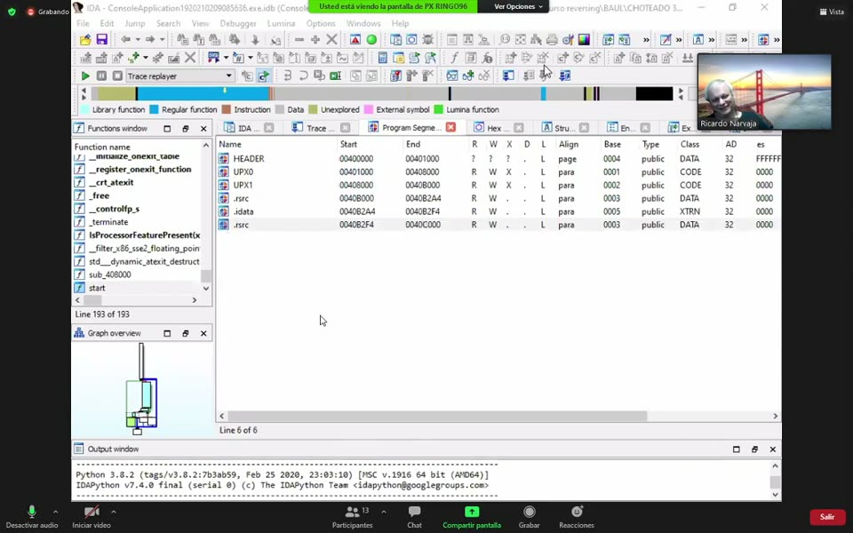
y se nota que controla Y BIM me está tratando de zafar de todo hoy para que no lo hagan laburar que no lo hagan trabajar de toda la forma No, lo que pasa es que no tengo muy buena semana y encima hoy me ha salido un contrapié y no tengo yo Alguien que haya hecho el chungo vamos Alguien que se ponga ahí Yo el chungo 3 no no lo hice porque tenía unos trabajos que hacer No, no lo importante es hacerlo aquí yo cuando cada vez que yo he hecho alguno no lo he visto anteriormente Sí, sí los que hace BIM los hacía en el momento lo resolucionamos en el momento con lo mejor de todo Si quieres Ringo Ponte yo te puedo ir ayudando Claro, si aquí estamos todos estamos todos está Ricardo y está Daniel están todos aquí para ayudar la idea es que se solucionen en el momento aunque no lo hayan hecho lo solucionamos acá que lo abra y vamos mirando tampoco es que es la muerte ese no es el choteado es un poquito más fácil si no pueden hacer el nivel 1 el nivel 1 básico que es un poco más fácil también ese también está el nivel 1 ese es un nivel 1 o sea que dentro de todo ese no es tan difícil ese es otro si no quieren pelear con el chungo 3 peleen con el nivel 1 De todas maneras llevo yo a 50 minutos grabados de vídeo y tú ya llevarás más tiempo porque estabas antes desde el zoom de todas maneras se está quedando todo grabado y ya está y no así que elijan así que elijan así que elijan si quieren les parece muy difícil el chungo 3 hagamos el el nivel básico 1 que está en la eluaul fíjense bájenlo ese es fácil es un vale pues si quieren lo paso aquí directamente al chat claro ese es un normal es un nivel 1 tiene un par de cositas ahí pero tampoco es el choteado ni el chungo ni nada así que ese ya está ah este es el chungo bueno este vas a ver bueno como quieras dicen ustedes ¿vemos este o el fácil? y fíjate tírale el que quieras tírale claro de todas maneras viendo el principio este ya lo hemos visto otras veces es más o menos parecido al chungo 2 tampoco el principio es igual sí claro pues tírale vamos viendo sobre la marcha y si no también que se suelte yo estoy dándole un ojito yo estoy dándole así un ojito por encima pero hay unas funciones que no las tengo muy claras por ejemplo esta haz que tu íntegar
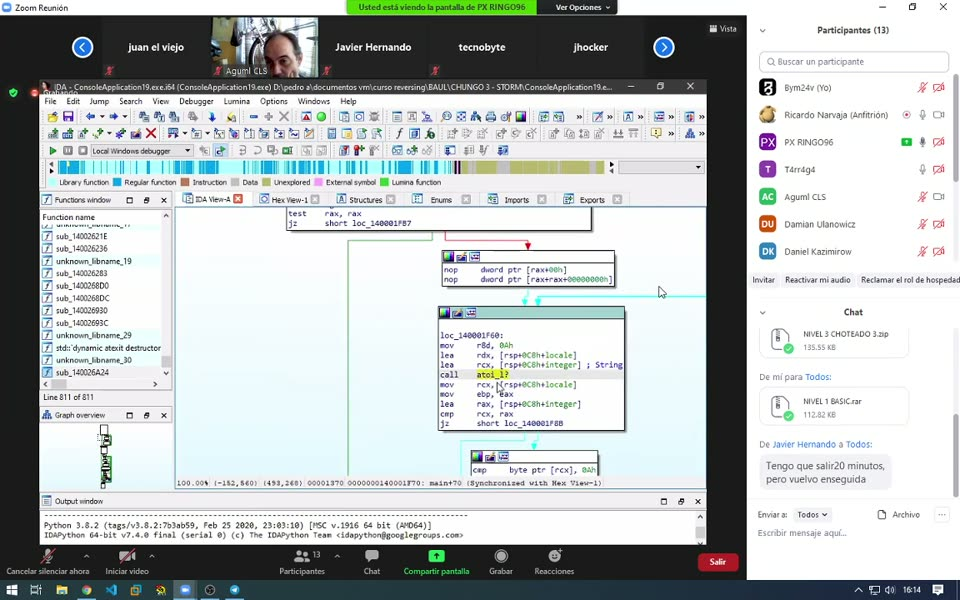
agarra una string y la pasa entero sí pero no estoy seguro porque esta la busqué en MCDN porque tiene el 16 ahí el 0A lo único que te dice cuál es la base diferente con la otra que la otra no te pregunta y esta te dice que ese el resultado va a estar en base 0A base 10 perdón base 10 te dice la base ahí si le pones 16 te lo haces decimal si le pones en 10 te lo haces decimal el otro argumento es la base si le pones creo que en las juntadas en todas si le pones guión bajo a tu i64 o algo así ya te sale arriba te sale cuál es el puntero cuál es la string y cuál es la base creo que guión bajo a tu i64 o algo así o sea la tenés que renombrar espérate lo digo o sea si lo tengo por aquí te lo digo tenés que renombrar creo que sí que es 64 así nomás ahí al lado de la i directamente me parece ¿aproba? no, no, no sin el guión sin el guión sin nada esto i64 pegado al lado de la i pegado el 64 volvé para atrás dos ahí 64 y saca el guión del final ese guión del final y la l también sí, sí ahí algo por ahí a ver qué dice vale es guión bajo str tu i64 guión bajo str t o i64 guión bajo str str str t o i64 es parecida también pero no te dice pues no lo dice pero es esa función o sea creo que ricardo utiliza la misma pero sin el i64 en el código tal pero en el código fuente pero es esa o sea a mí me salía esa sí yo y hace eso y hace eso es lo mismo el rd8 en r8d guarda la base 0a en el primer en rdx guarda el puntero a la posición donde se queda se quedaría en el intro si todo está bien en el 0a también y en donde pone string en la la cadena que tú le metes si te fijas abajo en el en el siguiente bloque en el cmp lo que está lo que está comprobando
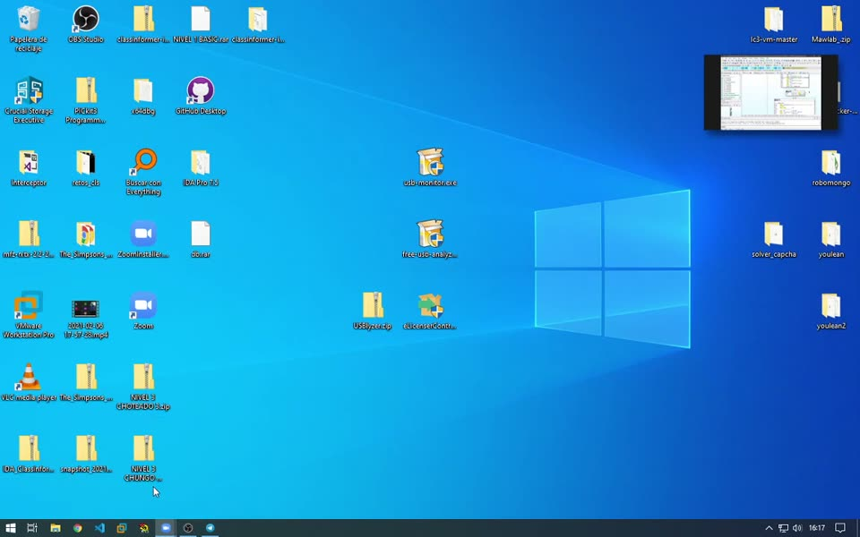
es que nos hemos quedado en el intro o sea si metemos 15 al final hay un intro pues comprobamos ese 0a ese comprobamos que nos quedamos en un intro o sea que la cadena no tiene nada más y no sé si me entiendes sí que apretaron entry y no hicieron nada que no no tipearon nada sí o sea que lo único que haces es que estás metiendo un string y te devuelve un número si no has metido un número o no o no se encuentra un enter te vuelve a pedir el entero y vuelve a y vuelve al arriba ok entonces nos cuide que ingresemos un entero y eso lo guarda aquí con el freguete después lo transforma en string lo transforma en string ese es el entero no lo transforma en entero la string la transforma en un entero ahí sí está la razón aquí sería ese es un puntero un puntero a la posición dentro del dentro del buffer en la que nos hemos quedado sí lo devuelve nax el resultado creo el resultado lo devuelve nax el resultado es nax ese y después lo va a poner en agulado en agulado lo va a guardar el número que pusiste en decimal en decimal bueno relativamente pues si te lo transforma en número en realidad vos lo vas a ver ahí en hexadecimal lo vas a ver cuando lo veas en el registro lo vas a ver en hexadecimal si vos tipeas la string 98 cuando te lo pase entero vas a ver fiaca aquí aquí verifica que que si que si apretamos enter ahí verifica sí ahí verifica que el último carácter es un enter y si no te vuelve a pedir el entero y vuelve a hacer el bucle aquí en primer lo que entramos lo pasa el número aquí acá viene la parte que murió el muchachito de la película eso no está si esto no estaba arriba no te saltes la de arriba justo encima de la que estás el AND
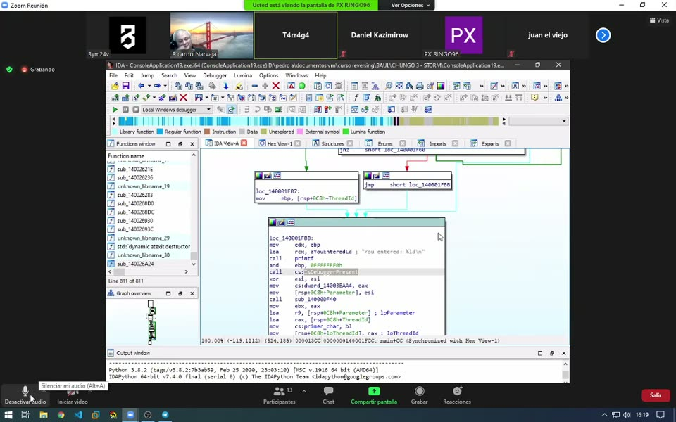
EBP que si te fijas el EBP era lo que tenías el entero en EBP tienes el entero eso también es la parte que murió el muchachito ahí hay un AND con el entero pero si te fijas la última la parte de abajo está a cero ¿lo ves? o sea que te pone a cero la cifra más baja del entero o sea el entero que vos tipeaste le hace le pone a c si vos tipeas qué sé yo FIACA te va a poner FIACO o FIACO no le ve cero al final no FIAC y cero y de Google Present te lo guardan esa variable global que tendrías que renombrarla esa 14 0 0 ahí abajo esa renombrarla ponerle debug flag qué sé yo y debug flag aquí guarda cero y llama esta función al parecer es es es algo de entrada no estoy segura cuál debe ser sí creo que creo que pide un carácter es es es igual que arriba es otro F ahí vuelve pide un carácter esto se parece mucho a los anteriores chocos GED CHAR pide un carácter sí un GED CHAR pide un carácter uy vos estás acá encima no me dejás salir es que guarda el primer char sí eso eso igual que pasa el parámetro en 3 ahí y crea el hilo yo creo que todo eso es la creación del hilo con el flag de suspender el flag a 4 que lo crea suspendido el 4 es suspendido el creating flag y lo crea suspendido 4 eso lo puedes cambiar el 4 le puedes cambiar a suspender lo puedes poner ahí si pones el cursor ahí adelante el 4 haces clic derecho adelante adelante ponés clic derecho symbolic content use standard symbolic content el de abajo y ahí busca control F
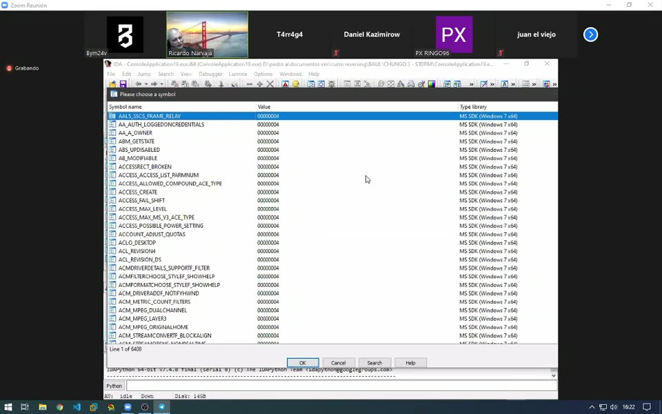
suspender son todos los 4 que hay ahí está crea y suspende ahí está ok entonces ya te queda ahí crea y suspende o sea que se va a crear suspendido no va a arrancar directo ahora hay que ver cómo hay que hacer cómo va a arrancar aquí compara si la si el carácter que nosotros tripeamos que lo tiene aquí en BL fue Q en caso de empezar Q para salir para salir si no viene por aquí R de I argumento cero ese debe estar cero ese valor debe ser cero nunca he sabido lo que hacía siempre lo dejaba ahí como una caja negra que no lo sé yo creo que no influye yo creo que no influye para nada yo creo que es cero se lo pone a cero sí creo no sé no me acuerdo pero creo que lo pone a cero creo que no es un contador no no es contador no yo creo que no que eso no era contador y fíjate a ver es que es como una parte de la estructura del hilo si te vete a vete a donde estabas ocho cero c ocho creo que es la estructura del hilo o algo así me parece este es yo creo que este es el argumento que le pasaron a a main si es un argumento no es nada pero no se utiliza no se utiliza no se utiliza para nada lo puso el compilador por molesto después dicen que ahorra tiempo el compilador no hace nada es un molesto aquí llama getchar de nuevo y lo guardas compara l con 10 ese es el bucle vale ese es el intro en cada en cada llamada getchar se mete lo que es el carácter y un intro o sea tú cada vez que metes el carácter por ejemplo pulsa la c se mete la c y un intro entonces ese bucle lo que va haciendo es quitar el intro o sea pide un carácter y quita el intro y sigue con el carácter verdadero y sigue con el carácter verdadero y lo va imprimiendo y ahí empieza aquí compara ojo
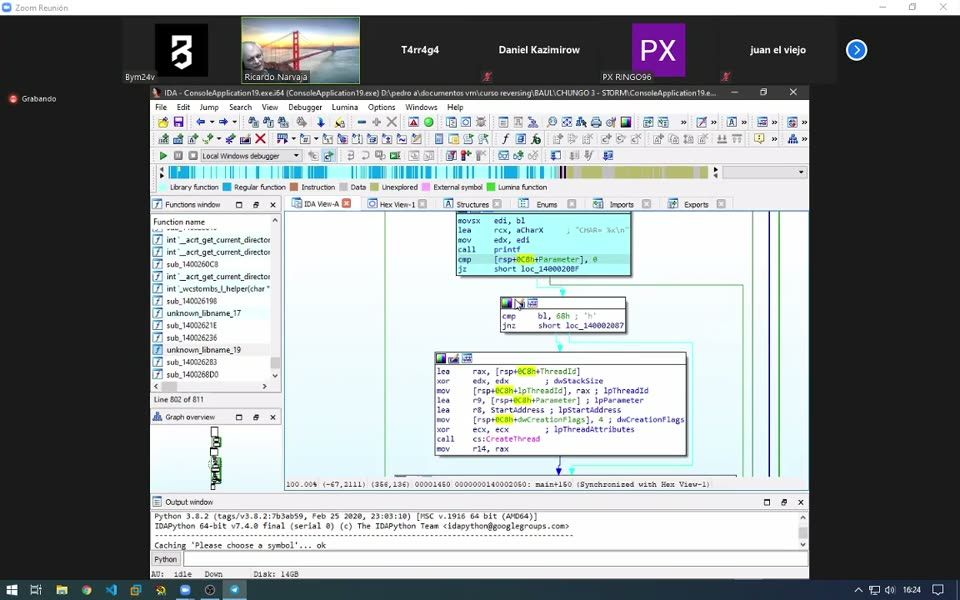
compara parámetro con cero ese parámetro que es fíjate que evita evita que vaya que hay 3 ese parámetro solo supongo que solo se afecte en el 3 hay que ver que es eso ese parámetro es si te vas al hilo verás que que se le mete al hilo y es el parámetro del hilo es el parámetro que viene del hilo si es la devolución del hilo o sea lo que te va dando el hilo ese es el argumento que se le pasa al hilo es el puntero que en el hilo vos lo podés modificar seguramente si vas ahí donde dice create thread ves que dice parámetro y es parámetro ves ahí justo en create thread en argumento lpparámetro justo es parámetro ahí un poquito más abajo dos líneas ahí ves parámetro es lpparámetro o sea que ese es el parámetro que le pasas al hilo como todavía no arrancó está cero pero este es otro hilo o sea fíjate bien que arriba estás creando un hilo va a dar cero y ahí tienes otro hilo por ahora tienes que arrancar primero hay que arrancar el hilo primero hay que arrancar el hilo que ya estaba antes de esto eso no va a pasar no va a pasar por ahí porque está cero o sea que ahí no va a entrar va a pasar de largo va a ir ahí aquí va a incrementar ese i y lo va a comparar con uno y ahí ese i es el contador del loop debe ser el contador del loop ojo que los registros en 64 bits muchas veces son variables casi porque empiezan cero y después lo va incrementando o sea que es como un contador empiezan cero sí ahí ya lo incrementa como va a ser menor o igual viene por aquí o sea que en el primer tiro no va a andar eso en el primer tiro no va a andar porque te va a tirar ahí a detenido y en el segundo detestía el de Bader Flag
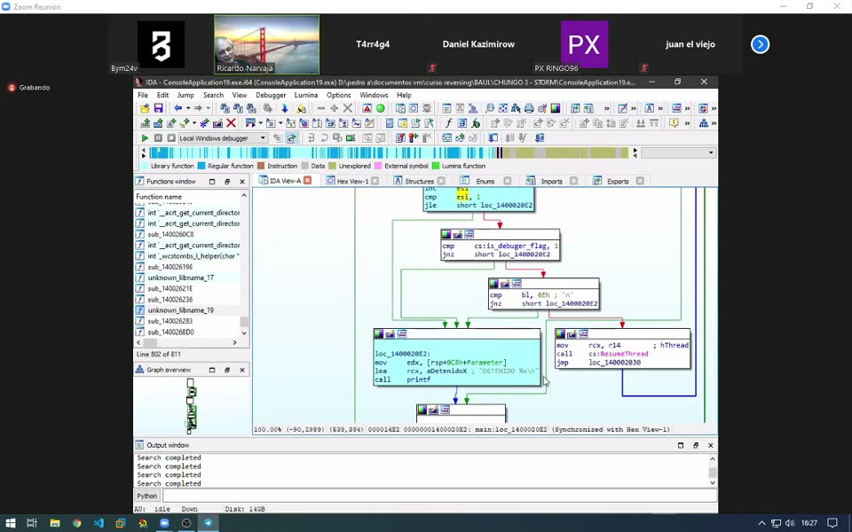
fíjate ahí activo verifico otra vez fíjate un poquito más arriba que donde estaba ahí que verificaba también que en el segundo tiro sí en un momento lo vas a tener que poner a debaguear este en el segundo tiro debagueaba te fijaba ahí arriba un poquito más arriba arriba arriba de eso antes de ir a detenido de la decisión es ahí compara si es dos ponele que cuando llegue a ser dos va a ir a comparar el de Bader Flag si es uno lo cual es uno porque si estás en un debugger es uno pero si no estás en un debugger no va no va a ir a resume 3 vale cero o sea que esto va a funcionar dentro de un debugger para que haga resume 3 o sea cuando vaya la segunda vuelta el segundo ciclo y dentro de un debugger y si BL el último carácter es una N va a ir a hacer el resume 3 y ahí tenés que ir a ver qué hace el código que está en el 3 todas esas cosas son las cosas que se tienen que dar para que se arranque el 3 el último el último char que tipeaste la N y ahí va a resume 3 o sea que ahí arranca el 3 y ahí tenés que ver qué hace el 3 tenés que ir a fijarte la rutina del 3 o sea ahí arranca y tenés que ir a crear 3 a fijarte la rutina y y fijate ahí qué hace primero compara que el primer carácter sea S o sea que influye también el primero que tipeaste no solamente el último o sea que si no es S cagaste tendrías que ir anotando todo esto porque son bastantes cosas si vete las anotando está la S ahí hemos visto que hay una N y hemos visto que hay una H bueno entonces tenemos que S debe ser 2 o más el contador del ciclo también tenemos que debe estar dentro del devagar debe estar perdón un momento Ricardo creo que bueno si eres el alfitrión porque Mafo creo que quiere entrar y necesita permiso ahí está adelante ahí le dije
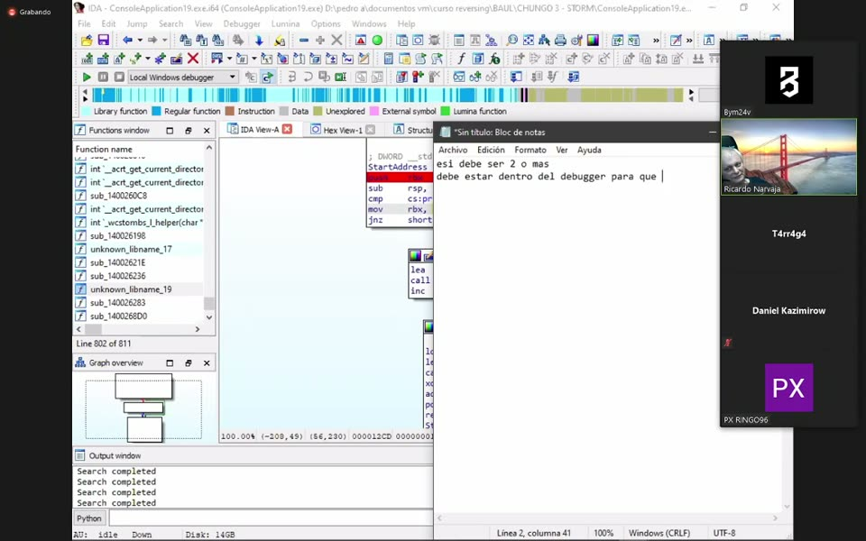
otra vez o acá otra vez o aquí lo que traes en la boca que es esto que traes me traes esto salí salí dentro del devagar y que el último que tipeaste sea N sea N chicos me tengo que ir ha sido ha sido un placer muy bien y que no lo vas a dejar grabando o como vas a usar no yo yo no lo estoy ah Tarraga cierto yo estoy perdido con quien habla estoy perdido bueno listo gracias por todo lo que hiciste gracias por todo lo que hiciste muchas gracias gracias a vos hasta la próxima los veamos hasta la próxima chau no le gustan más las juntadas extraoficiales así que las juntadas oficiales que hacemos entre todos y lo vamos compartiendo me parece mejor que hacerlo así que hacer las otras así lo hacemos entre todos está bueno está bueno sí sí está muy bueno pero la digamos las clases oficiales que es lo que lo único que voy mostrando no no seguir ya no las clases oficiales vamos a seguir con los videos o sea si hay alguna solución lo hacemos en un video y listo vale como hice yo con el choteado 2 que hice un video del choteado 2 y listo y lo otro que se soluciona acá lo solucionamos entre todos bueno yo me lo paso genial en esta charla así que por mí aquí pasa aquí pasa el el parámetro de RBX y es que lo incrementa sí y hay que ver y hay que ver qué valor tiene que tener o sea si eso influye el parámetro era el parámetro que estaba en la función principal en el mine sí él empieza con cero o sea cuando es distinto de cero ya o sea fíjate que ahí lo suma también cuando hace la cuenta ahí lo suma o sea cuando hace la comparación final o sea que también influye el valor del parámetro en la suma final porque no solamente lo compara al inicial para que para que haga resumen luego que resume viene aquí ya parámetro
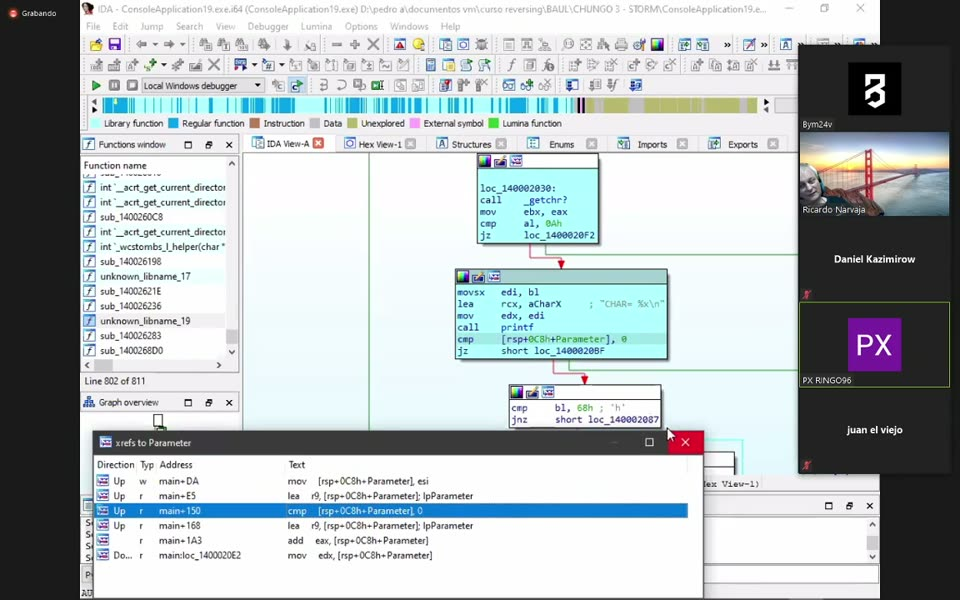
va a ser uno y va a comparar el carácter con la H si es H hace otro 3 este está más este está más enredado este es más difícil apareciste Aguml ¿dónde estabas? por aquí andamos viendo cómo lo hace no quisiste no quisiste ponerte vos estás acá otra vez otra vez acá pero no ves que yo estoy en otra cosa ¿para qué te subís? fuera ¿alguna vez le tocará a Angul presentar alguna? sí viene zafando lo que hace es llegar más tarde llegan más tarde así no lo enganchan es como cuando ¿sabes cómo hago yo? ¿viste? cuando son las elecciones en las elecciones los que llegan primero siempre nos falta alguno en la mesa y dice vení, vení vení vos y te quedás en la mesa y te tenés que quedar todo el día los días de eleccionario entonces yo nunca voy primero, primero porque sé que el primero lo enganchan siempre y lo agarra vení, vení quedate acá y sos ahora presidente de mesa entonces yo nunca voy primero, primero siempre espero que las mesas estén llenas cosa que no me agarren esto es lo mismo más o menos si venís primero por ahí te agarra y bueno ¿qué va a ser? vende este porque en orden las letras que se tienen que tipear o sea este lo verifico en el tres pero es el primero o sea que el primero tiene que ser ese luego la N y luego la H y bueno puedes correrlo poner un break y correrlo un poco a ver qué pasa también llegar a la comparación a ver qué es lo que compara si la parte donde compara luego la N no porque tiene que valer 2 más de 2 si pones la N valdría 1 hay un carácter por ahí que baila todavía en medio poner el break poner el break y traseando traseando total ahí ahí ponen el break por ahí tiene su vueltita o sea es medio chungo no es choteado pero tiene su chunguez
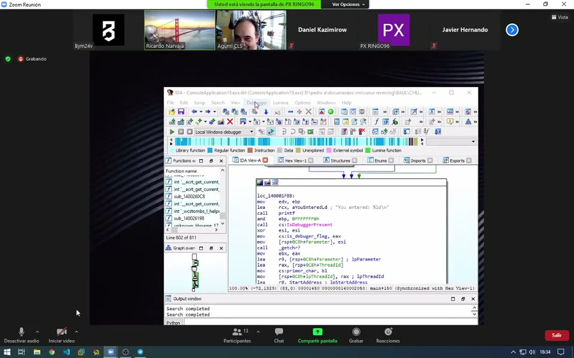
¡Ay, ay, ay, ay, ay, ay, ay! Tenés que entrar a un carácter, seguro está parado en la consola Pero está parado en la consola Un Enter, algo, no, algo Ah, ese era el primero, sí Y por ahí tenés que apretar de vuelta Porque por ahí tenés que apretar de vuelta A veces te queda por ahí en medio Ah, ponéle una A a algo, ponéle cualquier cosa Ahí está Bueno, ahora ya está Ahí está detenido, ahí no pasa nada Viene de nuevo Ah, acá en la consola M era Sí, pero ahora es 6 y vale 1 todavía Ah, sí, porque es que te digo Ah, bueno, ahora Le pusiste un break, poné la función del thread Para que si para ahí, si va para ahí Ya que ahora va a ir a resumen thread y va a arrancar Porque no paró, yo le puse un break Y porque tenés que darle run a veces Cuando uno está parado Ahí está, cuando uno para Para que se sincronice los threads hay que darle run Ahí paró Bueno Ese primer carácter era ese
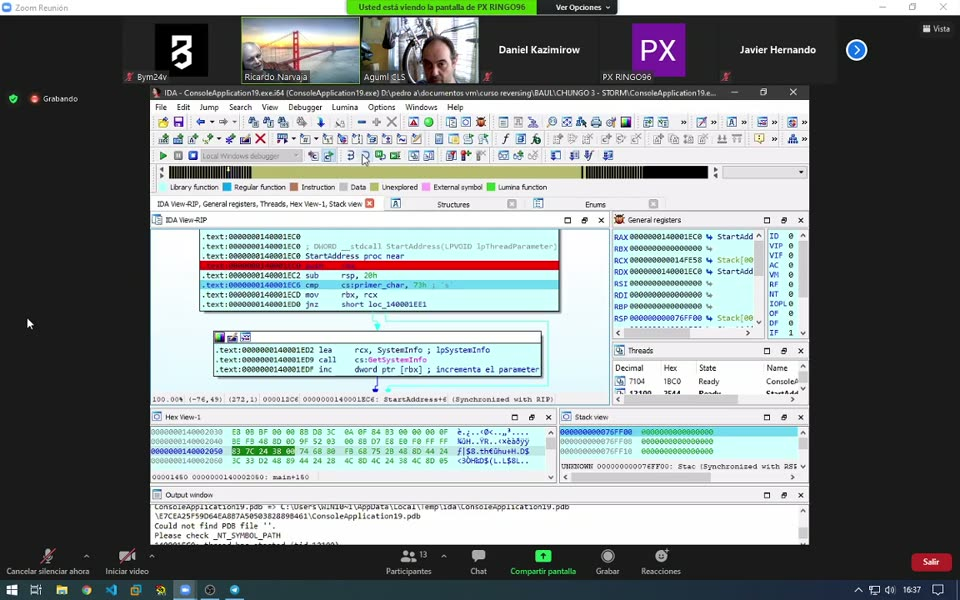
Ese está bien Y ahora va a que existe en info O sea que ahí te va a dar la info Eso porque Se fue a una DLL Está bajando los símbolos de la DLL Acepta Parece que se estaba dejando un vídeo de YouTube Dale run Dale run, dale run de vuelta Para que paren Yo lo que hice fue irme al get Y poner un breakpoint después Sí, sí, sí Ahí tenés que entrar de vuelta Era la H Salí vos de acá Si haces la H te lleva de vuelta A crear de vuelta el thread Este también tiene Crear y suspender No Ah sí, también Mirá que maldito Crear y suspender O sea te queda ahí Te queda ahí en la memoria Listo Ahora te lo va a crear Y vamos a ver si va Al resumen thread Ah, ya está Ya está, ya está Ah no, tiene que comparar ahí No, claro Está frichurro Claro, y qué es lo que falló Qué es lo que falló Fijate qué es lo que falló En la comparación ¿Cierto? Que ahí qué es lo que comparaba Parámetros Ah, el processor type Ah, el processor type Ve que son todos los tipos El tipo hizo Get system ¿Viste que te dijo Que system info? Get system info Sacó un valor Processor type Le sumó el pay size Todas esas cosas Y lo comparó Con EBP Que es el número Que vos metiste El número El número Con el LAN Con el LAN El problema Que todo el otro Es 32B4 Y el otro termina en cero ¿Y ahora qué hacemos? Esto me traba mi loco Bueno, vamos a Ah, pero tiene solución Tiene solución Esos son valores fijos No los puedes tocar Porque son de system info Así que los valores esos Son fijos El processor type Y page type Eso lo saca del primer
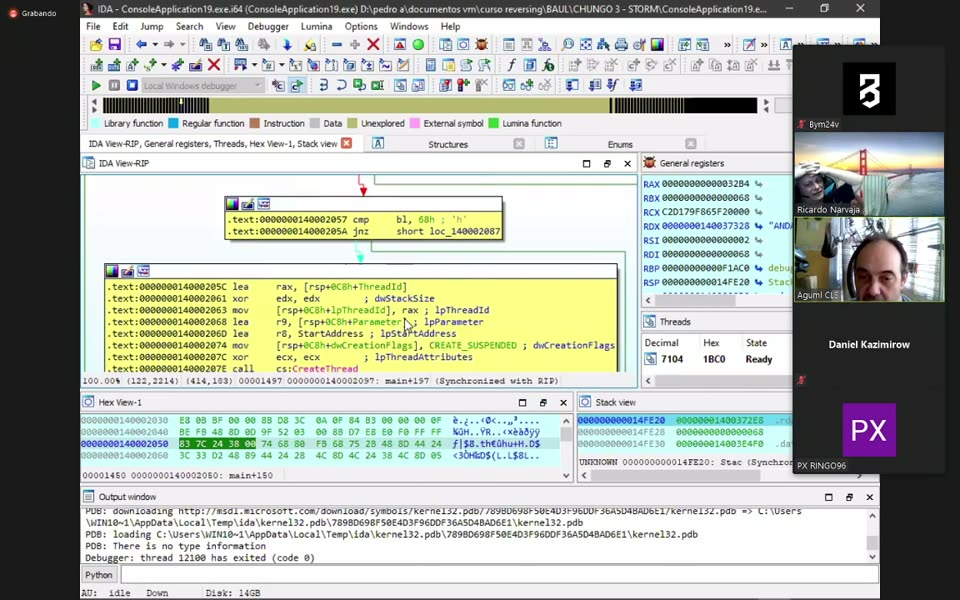
Voy a Voy a ver Este Ricardo Es un Es un maldito Rompehuevos Rompequinotos ¿Cómo rompe los quinotos este Ricardo? Muy bien Esta es la parte de la trampita Por eso tiene su trampita O sea, esos son valores Te va a tirar valores O sea, la estructura esa LP System Info Tenés que buscar la estructura ¿No? Está ahí bajo Un poco más por abajo Igual creo que está Enida Eso te lo está dando Enida Porque si enida te muestran Está porque te muestran Los campos Así que tiene que estar En el Tuvo un problema Porque Tenía tres estructuras De System Info Bueno Pero Dos con el nombre Muy largo Con números ahí Que no sé De dónde salieron Y las buenas Y tuve que borrar Las otras dos Para que me cogiera la buena Bueno ¿Y qué hacemos? Nada Ya está Se murió Voy a Voy a ver la estructura Esta A ver Es que no entiendo Esta API De dónde saca Esa información Y cuando hace En el TRED En el TRED En el TRED Sí, sí O sea, pero O sea, que hace bien La API No Aquí busquen MSN Pero no Eso te dice Cuando tiene información De la computadora De tu sistema De la computadora Incluye la arquitectura El tipo del procesador El número del procesador Todos son datos fijos No cambia nada O sea, eso va a ser Cosa de tu máquina O sea, que va a dar Un número Olvidate Eso va a sumar Un número que es fijo Vos no lo podés tocar Eso no lo vas a poder tocar Es un dato de tu máquina O sea, que lo tiré Cien veces Va a ser siempre Page size Creo que es mil Fijate Page size no es mil Y el procesador type Pues el tipo de procesador Que tenga Ya no lo vas a cambiar El tipo de procesador Así que eso ya está Eso no lo podés cambiar Fijate Page size es diez mil Es mil Sí, mil Ahí está
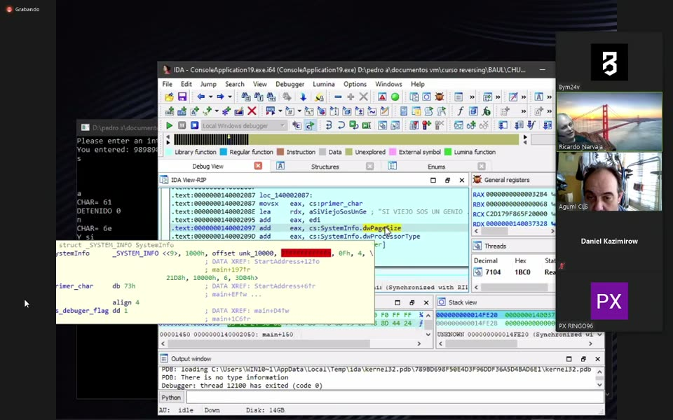
Y el otro Es ese procesador type Es Y el primer carácter Tampoco lo puedes tocar Porque si no No te va a arrancar El hilo Sí Y bueno Ahí está todo Ese es el problema Ese número Ese 32B4 Va a ser fijo O sea, que vos Lo vas a tener que comparar Con eso Lo único que podés sumarle Es ese valor del parámetro Que ahí Es lo que le podés sumar Ese Es lo único que vos podés afectar Para que se llegue a valer El valor que vos tipiás En EDI En EPP tenía El número Ahí tiene Ahí tiene FIACA Pero le ha sumado En EDI A ver, a ver Déjenme retomar EPP Contenía El número Con el último Cifra Cuando te pone encima Con el ratón Lo puedes ver arriba Pone FIACA FIACO FIACO Eso, FIACO Pone Es con la O En vez de con la FIACO Claro Va a decir un FIAC Y un Cero En realidad no lo compara Lo hace And O sea que le pone Así Son 6 y F No son 7 Son 6 y F Veo, ¿no? Sí, vele Voy a hacer 6 Para cambiar al último Y Ahí está Compara el número Y a X es fijo O sea Salvo lo único Que vos podés tuñar Ahí parece ser O parámetro Ese parámetro Que es el valor Que se incrementa En el TRID O No sé ¿Qué más? EDI también ¿De dónde sale EDI? También es otro valor Que también podés tuñar Pero esto está sencillo Lo único que hay que hacer Tomamos ese valor? Tomamos ese valor? Tomamos ese valor 32B4 32B4 ¿Qué hacemos? Y qué hacemos Ah, no Porque le hizo un A Claro Siempre te va a terminar en cero Y vos no podés O sea Vos no podés pasar Vos no podés pasar Ese número No lo podés pasar Pero mira que hay en EDI Fijate que hay en EDI Y fijate que hay en parámetros Los dos trucos son ¿Qué podés afectar vos? Uno es EDI Y el otro es el que está en parámetros ¿Ves? En EDI vos tenés algo que suma ahí ¿Ves? Ese valor Lo afectas vos Fijate de dónde sale Andá para arriba Ese EDI Ahí está ¿Ves? Es un carácter Es posiblemente El último carácter Que tipeaste Debe ser Seguro Entonces con el último carácter Que tipeaste Vos podés
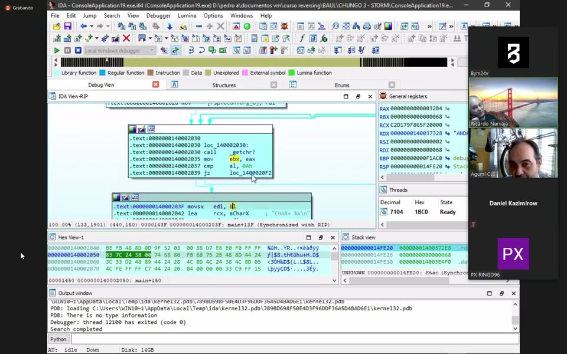
Tunear el resultado Para que termine en cero Es una Suma ese carácter O sea que al sumar ese carácter Creo que es el último O el primero O sea Es un carácter que es tuyo O sea que vos podés tunearlo Con ese carácter Y la otra Si no Fijate La otra Es el parámetro La otra Y la otra es el parámetro El parámetro Cada vez que se Que se ejecuta el thread Se incrementa el parámetro Entonces si vos lo vas incrementando También funciona El parámetro ese Está dentro del thread O sea que Si uno lo vuelve A repetir Repetir Repetir el thread Cada vez que pase Se va a incrementar en uno Y va a llegar a un punto Que va a valer Va a terminar Siendo El valor Ponle Ponle un Redpoint Ahí Ahí Ahí Bueno Entonces Lo que Tendremos que hacer es Ver que vale aquí Antes de sumar este Claro Y aquí este número Si sería Si sería Entonces aquí vemos Que vale aquí Que vale aquí Ah uno es el primer char Uno es el primer char Y el otro El primer char Ese es fijo Ese no lo puede tocar Y el otro Ese sí O sea y después Va sumando los otros números Pero qué tipo Molesto este Ricardo A la una me tengo que ir Porque ya me viene la comida Pero bueno Ya estamos dos horas Creo que Igual ustedes pueden seguir No se piensen que porque ya me voy Y se acaba el mundo Al contrario Empieza el mundo Y eso no se puede ver los valores Cómo se ve el valor de esto Tenés que No pero eso es lo que pasa Que ese tenés que Claro Ese fíjate Anda ahí Anda donde dice PaySize Anda de vuelta No no Donde dice PaySize Ahora tienes que armar Claro Lo que pasa es que está armado Como Array Dale doble clic Al estar armado como Array Hacelo Un define Que te lo undefina Después le vas poniendo Ahora devolvé Y hace doble clic A ver qué valor es Y le das D Para que te arme El valor ese solo A ver Ricardo Si tiene alguien Para meter Apretá D Apretá D Que es un Es ese valor Listo Si tiene alguien Para meter En Participante View Two people Entered Pero entraron No No están para entrar
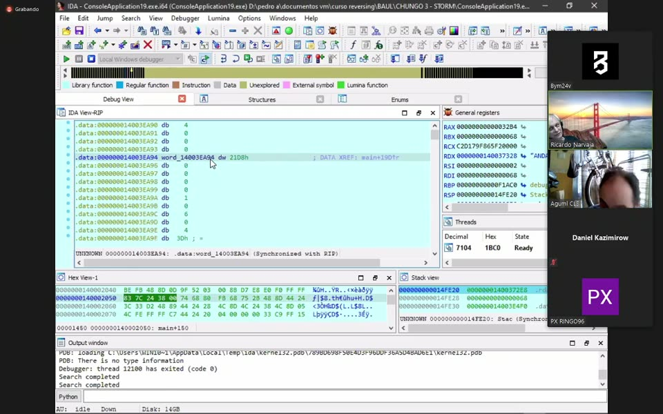
Bueno Yo no veo Bueno Les voy a hacer el host A BIM Por si acaso Eso que le pasa a él Me pasó a mí también Era porque tenía Como te digo Tenía varias estructuras De System Info Borrando las otras Ya me armó la estructura El solo Te hice host BIM Así cualquier cosa Si yo me voy a porfar Después Vale Bueno Así fíjate Si hay alguien Que no puede entrar Y alguien Que dice que no puede entrar Pero bueno Eso Después lo verá El grabado Que va a ser Que no puede entrar Hola Hola Buenas Gracias Si yo ahora Ahora cuando se termine Esta Si quieren seguir bien Y si no Con el grupo Con el grupo De Gamehacking Estamos también Haciendo unos mods A un videojuego Para hacer los multiplayer Y todo eso Entonces la gente Que quiera eso La otra vez ya lo dije Que os quiera Es bienvenido Ahí lo pasa Que es más programación Más reversing de cosas Y otro tipo De cosas diferentes Pero es un juego Muy básico Muy sencillo Donde se puede aprender Bastante fácil Bueno Y ahora ¿Qué sabemos? Voy a defender Para empezar de nuevo Para poder agregar bien El El carácter Tiene que meter Otro carácter Si Uno solo No Te queda esperando Tienes que meter uno más Ahora si Qué ejercicio Podrido La verdad Pero divertido No voy a decir Que no se divierte Con todas estas cosas ¿Doy la solución O qué? ¿Eh? Sí, sí, sí Debería haber una ¿Doy la solución? Ah, claro Ya está
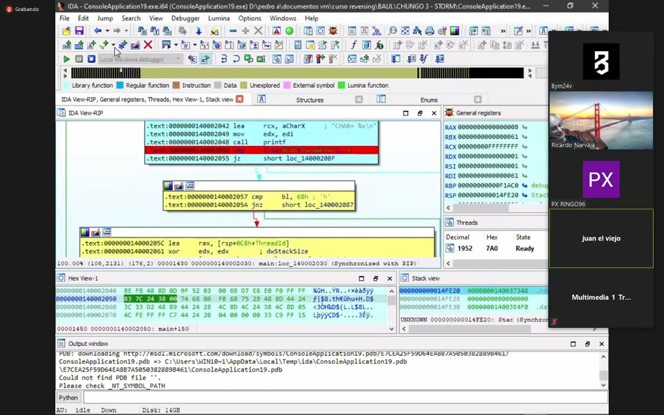
Igual ya está llegando Ahora la va a cantar Hay más de una solución Hay varias Sí Una Una es ajustar El carácter Y otra es ajustar La cantidad de veces Que vos entrás Porque en cada vez Ese parámetro Se va incrementando Entonces vos sabés Que le vas dando Le vas dando Le vas dando Y se va incrementando Incrementando Y va a llegar a un punto Que va El último carácter Va a terminar siendo Que coincide Así que eso También va a funcionar Bueno Bueno Si querés darlo Dale solución ¿Querés que dé la solución Como es? A ver Sigue Ah bueno Esperá Sigue Dejalo que siga No quiere Ya está Igual ya está ahí Ya está en eso Está cerquita Está cerquita ya Está cerquita ya Hay que compaginar Todo nada más Hay que compaginar Un poco todo Andá notando bien Todo lo que Vas a hacer Todo lo que tenés que hacer Para entrar Qué tipo molesto Este Ricardo Mientras él está Ayer entré Viste que Justo Tarraga Tuvo un problemita Con los certificados Entonces fui a mirar Ese error Y justamente Cuando yo había hecho En un tutorial viejo También había instalado IPIDA En el curso de IDA Desde cero Cuando usaba El IDA 6.8 Y entré Claro Y salía ese error Y era un Blog ruso Y hablaban de los tutoriales Míos Y decía Che este Ricardo Al final no anda No me anda Porque no puedo Estar el certificado Y uno le dice Pero esos tutoriales Tienen dos o tres años Vos qué te pensás Que te va a mantener El plugin para vos Discutí En ruso Yo no tuve que traducir Al castellano Y cuando vi Que tradujo Al castellano Me estaban puteando A mí Uno me puteaba Y el otro me defendía Recién me enteré Cuando vi el error Casualmente Que le pasó Justo eso mismo De los certificados Hola Hola Hola ¿Qué tal? Ya estamos En las últimas Y ¿Qué pasa?
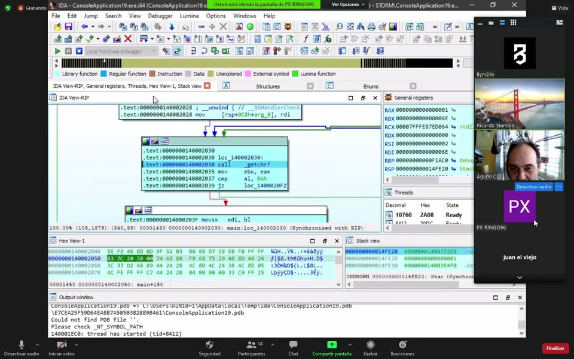
Y la comparación Pusiste Creo que tendrás Que entrar algo Sí Ahora se está Ejecutando Hay que entrar A Ruma Hay que entrar Algo En la persona Lach Ahí está Pero qué cosa Bueno Es parecido Al Sumo 2 Es parecido Sí Lo único que tiene Que este Tiene que ver Cómo ajustar Ajustar ese cero Que queda al final Ese ant Te rompe bastante Lo quinoto O sea Hay que ajustar eso O sea Tiene ese ant Y la posibilidad De ajustarlo Por el lado Del carácter Va a ajustarlo Por el lado Del thread O sea Si vos lo volvés A arrepentir El thread Te vuelve A incrementar El parámetro Ahí tenés el valor El primer carácter Está en EAX Es el 73 O sea Es el 73 Eso lo suma Andan poniendo Suma eso Primer carácter Más Eddy ¿Qué es el 68 Que es la H Se ve que el 68 Es el que está en Eddy El 68 La H O sea Que Tenés que fijarte Porque si la H La necesitas Bueno En realidad No la necesitas Porque si no Necesitas entrar De vuelta Al thread Por ahí No la necesitas La H La podés ajustar Más Hay que ver Si en el último Necesitas la H Porque la H Te lleva de nuevo Al thread Pero si vos ya Ibas a ir a comparar Y lo ajustás No necesitas Entrar de vuelta Al thread Entonces por ahí La podés cambiar La H Sería H o B Es el 68 La H La H Esa hay que ver Si no se puede cambiar Para mí se puede cambiar Si se puede Se puede Pero bueno Si lo que quieres Ir incrementando El parámetro
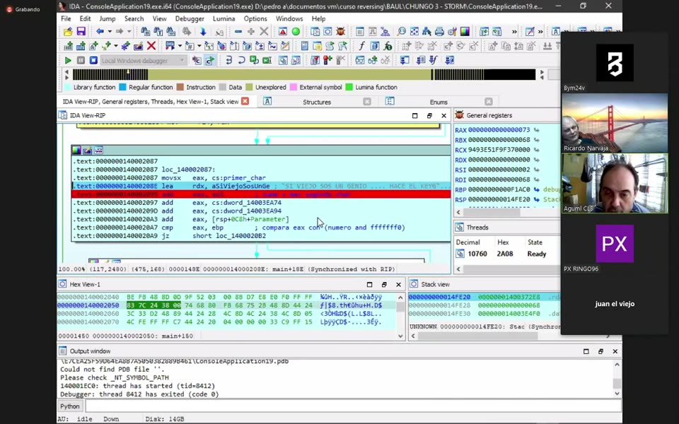
Vas pulsando H H H H Hasta que se va ajustando Pones un break Pon ahí en la comparación Y bueno Te va El parámetro Ves que ahora Es cuánto vale el parámetro Uno Parámetro El parámetro Ahí No arriba El parámetro Ahí Poner mouse encima De la palabra parámetro Ahí ¿Cuánto vale ese? Uno Es decir que Si va a llegar un punto Que se va incrementando Que El otro sigue siendo 32 B4 O sea que Vas a tener que hacer Toda esa suma Y del otro lado Y bueno Tendrás que poner 32 B O sea Podés ser 32 B Cero Y después sumar Puedes hacer 32 B Cero Y después sumar Cuatro veces Con el parámetro Puedes también O sea Poner 32 B Cero Y pasas cuatro veces Por el thread Con H H H H Y te va a quedar 32 B4 En vez de número Ponerle 32 B Cero Pasado a decimal 32 B Cero Pasado a decimal Y después cuatro veces Que entres al thread Te incrementa el No sé cuánto es eso 32 B Cero en decimal 12.986 ¿Cuánto? 12.986 Gracias O sea que Si vos tipeas ese número Y pones todas las letras Como corresponde Y pasas cuatro veces Tendría que andar Pues aparece cuatro teclas Cuatro veces la H Para que entren En resumen H Sí, cuatro veces la H Exacto Bueno Podés por ahora Que está afuera también A ver si En uno que esté afuera Del debugger Ah, pero este Este afuera del debugger No funciona, ¿cierto? No funciona Me olvidé Bueno, eso también Se puede parchar En este caso Si es una cosa Que te impide Hay que parcharlo Al final de todo O sea Más bien que tiene que funcionar Afuera del debugger O sea que eso Hay que parcharlo Ahora tiene que meter Tiene que meter Que se está ejecutando Ah, tenés que poner algo En la En la consola La consola Sí, pero Estoy tratando de quitar Los breakpoints De pausarlo Y pausarlo Hay pause process Pause process No, los breakpoints Arriba es la ventana Donde sale la ventana El breakpoint Ahí puedes deshabilitarlo Lo deshabilita
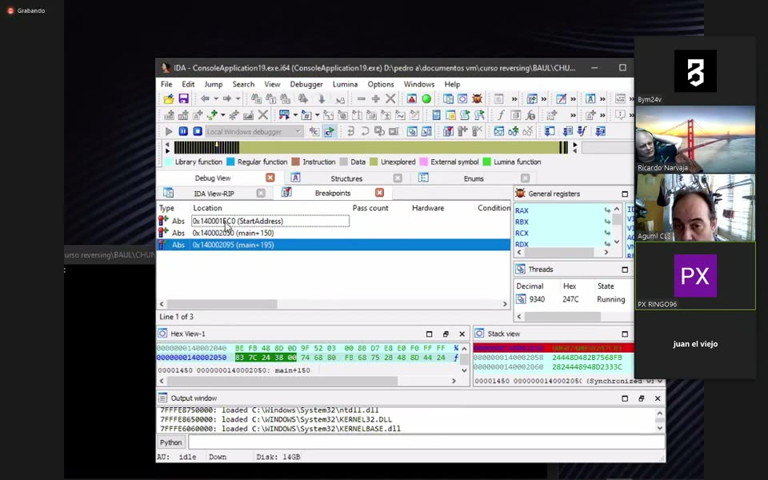
En vez de borrarlo Si quieres Disable Shable Disabilidad Bueno Dale Y ahora a ver O sea Tienes que esto no funciona Si no está un debugger Atachado En ejecutable Me refiero Hostia Que perro sois De verdad O sea Que si vos los sacas Probas todos los números Te da todo lindo Después cuando los tiras afuera No anda Ahí está Ahí es lo que consiste Un buen análisis Porque Si no haces un buen análisis No te vas a dar cuenta de eso O sea Todos estos números Que vos vas a sacar Andan dentro de un debugger Pero después de un debugger No andan Compras un programa Que te ha costado 500 pavos Y lo tienes que meter al debugger Para que funcione ¿Te imaginas? Pero Lo más lindo Es que todo funciona Fuera del debugger Y dentro del debugger No Este es al revés Sí, sí Claro Es al revés Qué cabrones Hasta que llegue No Ahí ya no hay nada que hacer Hay que meter Voy a darle para ver Qué valor tenía aquí Ponele Ponele realmente Ponele la comparación directamente En la segunda entrada Pone S-A-N-D Bueno chicos Yo de la una Me tengo que ir Bueno Contermínenlo Ya Y después El tel no se resumió El tel no se resumió Es por eso Muy bien maestro Ah Porque Estaría fuera el debugger Pulsar N H N H N H Para que vaya resumiendolo Y Y creándolo Resumiendolo Y creándolo Yo lo dejo grabando Me voy a Que tengo acá Una cosita Lo dejo grabando Y lo dejo Yo lo que puse No cierro Para que quede grabando Termínenlo Y después veo como era Chao Chao Ricardo Chao Ricardo Lo que puse es S-H-N-D S-H-N-D S-H-N-D Ese número está bien S-H-N-D
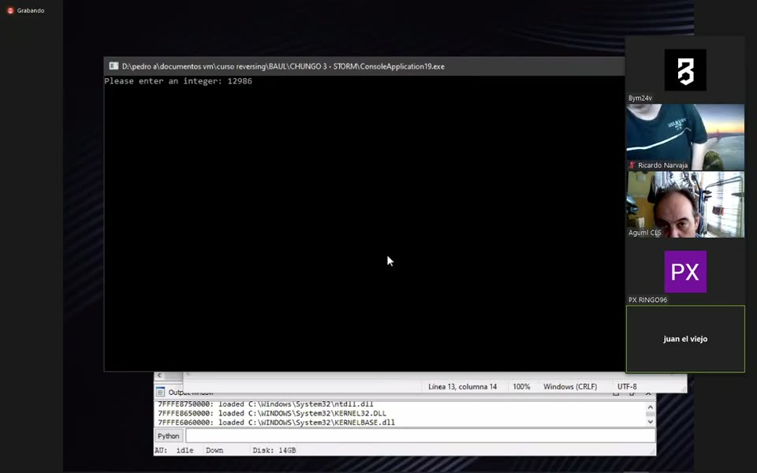
S-H-N-D SH. Sigue, sigue, sigue. Si la pones toda seguida te va bien también. SH. SH. ND. SHND. Vale. A ver, 3 debe resumirse. Vale, ahora en este parámetro debe resumirse. 4 veces. No, no, ya está bien. Sigue traceando. Vamos a seguir traceando. Vale. Sigue traceando. Está esperando un carácter. Ahora mismo está esperando un carácter. Ahora la H. Voy a estirar para ponerla en la comparación. Sí. Y pon la H para que te crees. Ahora mismo no la has pasado la comprobación. Porque te da el B0. Sí. Sí, H. Y ahora la N. Más de cuánto vale el RBP. 22B0. Listo. Ahora lo que tenemos que hacer es incrementar parámetros. Tienes que revivir. Que parámetros se incrementen en este hilo. Y para que eso se incremente, para que el hilo se resuma, debemos presionar la N. Hay que presionar la N cuatro veces. ¿Cierto? No, no. Cada vez que tú presionas la N, revives el hilo. Una vez que lo revive, el hilo ese se muere cuando termina. O sea, tienes que volver a crear otro hilo y volverlo a revivir. Cuatro veces. O sea, tienes que darle ahora la N, luego a la H y a la N, luego a la H y a la N. Así hasta que... Ah, ok. O sea, ahora le damos a la N.
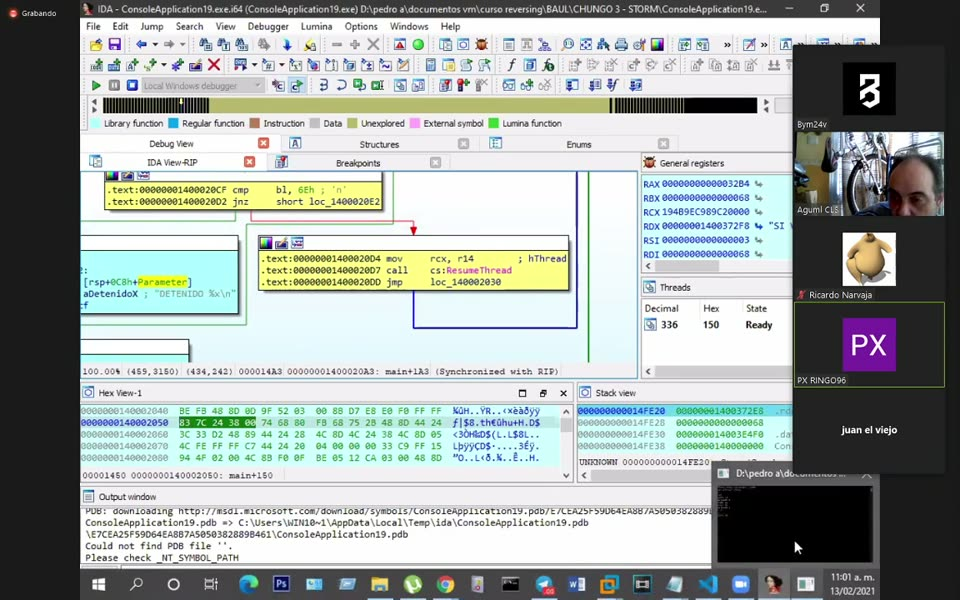
Pero está... Está en un... Ahora está parado. Sí. Ahora mismo el hilo está vivo, ¿no? Estaba creado, sí. Ahora mismo sí. Ahora le damos a la N. ¿Para la H? No, eso ya... Eso ya se ha ido a por ahí. Sí, puede ser que había un carácter ahí un poco raro antes, ¿no? Sí. A ver. Primero el número. Mira a ver cuánto vale ahora mismo. Mira a ver cuánto vale. La comparación. Cero. Cero. Y el de arriba. Ahora. Y el de arriba. La H para que incrementen. Está corriendo. Ahora no te muestra eso. Está corriendo. Está corriendo no te va a mostrar. Claro. Ay. Así que valiendo lo mismo. Ahora mismo. Ahora sí puedes verlo. Ahora sí que ha parado. Vale dos. Ahora vale dos. El problema que estás teniendo a ver. Tú has introducido el valor de 32B0. El problema es que eso se va incrementando, pero a 32B0 nunca va a llegar. Porque... Sí. Para darle 32B4. Sí, sí. Sí, sí. Por eso, pero... No, no, no. No, no. No, no, no. No, no, no. Y que acaba de cero. O sea, 32C0. Es el siguiente que hay después. Ah. Claro.
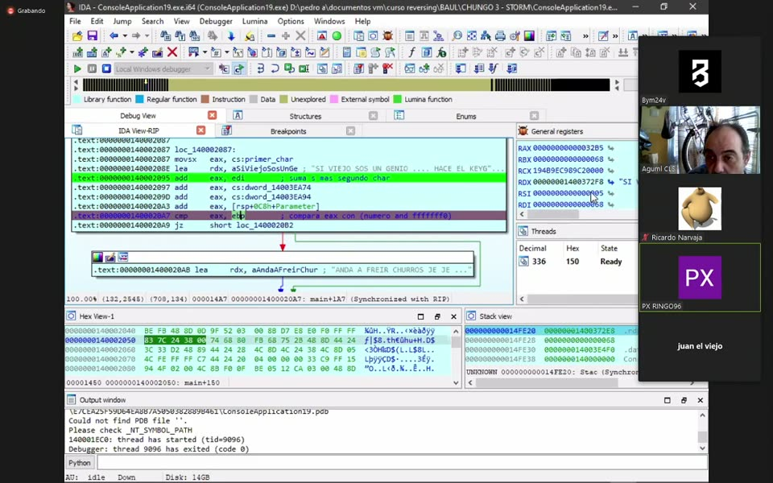
Es el 32C0 y ahora sigues con eso hasta que llegue al 32C0 incrementando eso. Sí, porque ahora vale 32B5. Ya se pasó. Claro. Y tú sigue valiendo B0. Arturo y yo no va a cambiar nunca. Porque le hace el AL. No. A ver. El que tiene que ser 32C0. Tiene que ser 32A9. Vamos a comenzar de nuevo. Porque si no, no vamos a... Yo de algún modo lo hice de otra manera. Yo... Páralo. Muestra tu... Muestra tu solución, Agumi. Por favor. Puedes mostrar tu solución. ¿Y cómo manejo yo esto? Yo es que no tengo mucha idea de cómo... A ver. Nada, abajo le da a compartir pantalla y listo. A ver, páralo. Páralo. Ahí. Páralo, no está parado. Páralo. Páralo para comenzar de nuevo. Vale, es que va a hacerlo Angul, Juan. Va a compartirlo. Vale, vale, vale. Bueno, luego parece ser que tú también la has resuelto ya, ¿no? Sí, el mío es 12.986, después las letras seguidas, S, H, N, D, y después cuando sale el I, si, poner la H y ya está. Claro, que ha metido todas las letras de un tirón y ha esperado algo así. Y así no tengo que ir... Ya, ya. Ha hecho todo de un viaje. Vale. ¿Te sale lo de compartir pantalla, Angul? Pero me dice que la anfitrión inhabilitó la función de compartir la pantalla. Vale, pues, a ver. A ver, pues te hago a fin de día directamente y... ¿Dónde está? No lo sé. A ver, dentro del móvil. A ver, dentro del móvil.
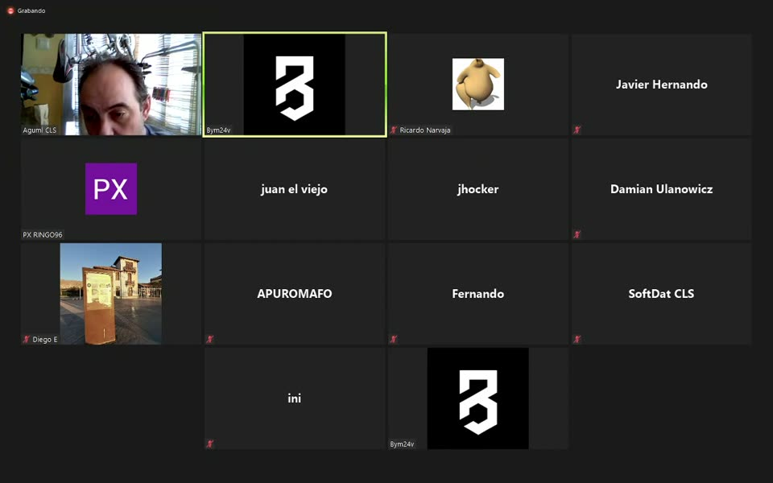
A ver, dentro del móvil. A ver, dentro del móvil. A ver, dentro del móvil. A ver, dentro del móvil. A ver, dentro del móvil. A ver, dentro del móvil. A ver, dentro del móvil. A ver, dentro del móvil. A ver, dentro del móvil. A ver, dentro del móvil. A ver, dentro del móvil. A ver, dentro del móvil. A ver, dentro del móvil. A ver, dentro del móvil. A ver, dentro del móvil. A ver, dentro del móvil. A ver, dentro del móvil. A ver, dentro del móvil. A ver, dentro del móvil. A ver, dentro del móvil. A ver, dentro del móvil. A ver, dentro del móvil. A ver, dentro del móvil. A ver, dentro del móvil. A ver, dentro del móvil. A ver, dentro del móvil. A ver, dentro del móvil. A ver, dentro del móvil. A ver, dentro del móvil. A ver, dentro del móvil. A ver, dentro del móvil. A ver, dentro del móvil. A ver, dentro del móvil. A ver, dentro del móvil. A ver, dentro del móvil. A ver, dentro del móvil. A ver, dentro del móvil. A ver, dentro del móvil. A ver, dentro del móvil. A ver, dentro del móvil. A ver, dentro del móvil. A ver, dentro del móvil. A ver, dentro del móvil. A ver, dentro del móvil. A ver, dentro del móvil. A ver, dentro del móvil. A ver, dentro del móvil. A ver, dentro del móvil. A ver, dentro del móvil. A ver, dentro del móvil. A ver, dentro del móvil. A ver, dentro del móvil. A ver, dentro del móvil. A ver, dentro del móvil. A ver, dentro del móvil. A ver, dentro del móvil. A ver, dentro del móvil. A ver, dentro del móvil. A ver, dentro del móvil. A ver, dentro del móvil. A ver, dentro del móvil. A ver, dentro del móvil. A ver, dentro del móvil. A ver, dentro del móvil. A ver, dentro del móvil. A ver, avisarme si se ve bien la pantalla. Sí, sí. Sí, sí. Perfecto. Se ve ya, ¿no? Sí, sí. Yo lo que hice. A ver. Tú aquí puedes variar dos cosas. Una es el parámetro. Que lo vas incrementando cada vez que creas evilo. Y lo revives. Y el otro es el último carácter que metes. ¿Vale? Entonces hay dos formas de solucionarlo. O te buscas un carácter que cumpla con el valor que tienes que tener ahí. O sea, que te acabe en cero el serial. O vas incrementando el contador o el parámetro. No hay... Hay esas dos soluciones. Entonces, vamos a ver. A mí es que, yo no sé. Se supone que tienen que ser valores únicos del procesador, ¿no? Pero a mí me daba lo mismo. Yo creo que a casi todo el mundo le dará igual. A ver, tenemos que... Lo que suma es... El serial era... A ver... La S. El carácter de la S.
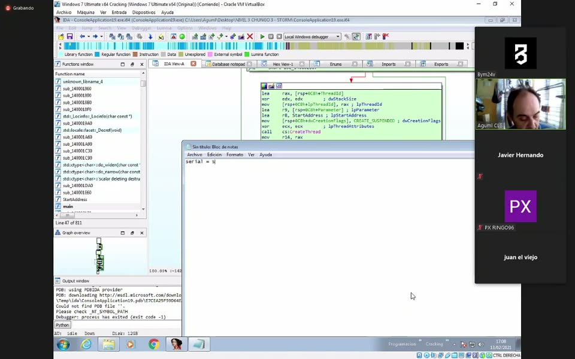
Más... El último carácter. La D. ¿Dónde es la D? La D. ¿Dónde es la D? Más la... Más la... Más la info... De... la info de... ¿cómo era eso? no lo veo ahora más lo de la página, el tamaño de la página más el tipo de procesador, ¿no? entonces ahora tenemos que el serial era... ¿cuánto era? 32V0, ¿no? 32V0 vamos a ponerla así para que se vea la S era... 73 nos vamos a aprender de memoria y el último carácter digamos que es X porque ese puede variar no... ¿sabes? sí, sí, puede poner... a ver, lo voy a correr y voy a mirar los datos de eso porque yo no me los sé vamos a poner por ejemplo... vale, la S aquí puede ser cualquier carácter y después a la M vale, vamos a ver los datos de compadre y ahora vamos a meter por ejemplo la A vale y aquí tenemos que este vale 0x0, creo que era, sí o sea, el ser fijo vale siempre lo mismo vale vale y este vale si te fijas a mí me sale bien la estructura
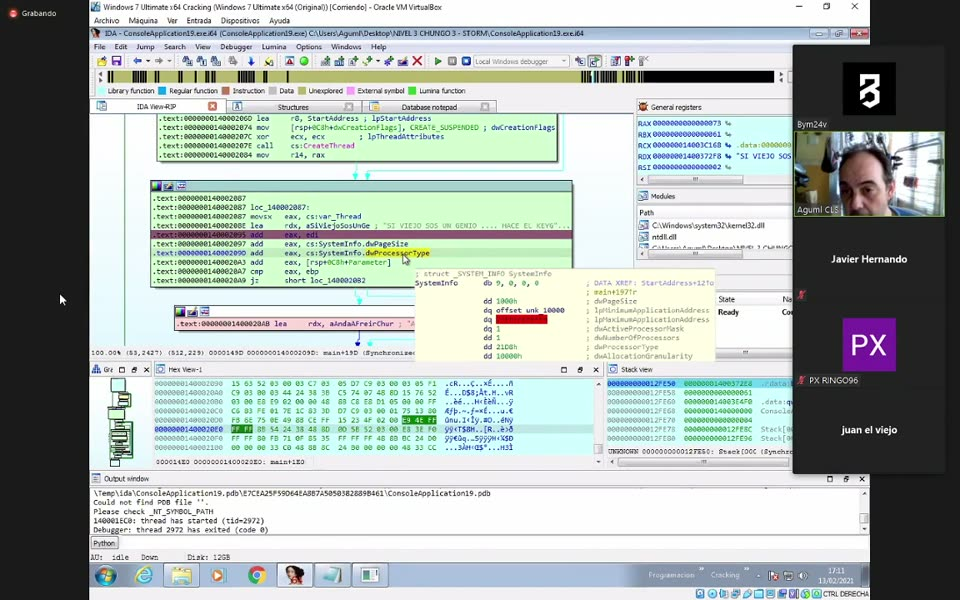
me sale uno debajo de otro bien ordenado vale, yo lo que hice es que me vine aquí y le di a la T y aquí me aparecían a mí System Info, System Info no sé qué, System Info no sé cuánto borré las otras y le di que eligiera este y ya me lo muestra todo bien vale que se valía 21 de 8 o de 8 otras veces que en otras juntadas cuando no existía esa estructura hemos visto cómo copiarla, meterla en localtai y luego hacer lo mismo hacer, a pulsar el D y salir creo que lo hice así vale, perfecto tranquilo ¿cuánto era el serial? ¿cuánto valía el serial? ¿22 de 0 era? claro bueno, es 32 de 4 en verdad b 0 b 0 si, eso es lo que te da a ti y no lo que tiene que ser no, no, eso lo da siempre 32 de 0 entonces tenemos todos los valores y nos falta la x, ¿no? por saber qué le trae el problema que tú tienes aquí es que tú el serial que meta siempre va a acabar en 0 si tú metes 32 de 0 ahí no te va a dar 32 de 0, te da 32 de 4 o sea, tiene que ser mayor que 32 de 0 claro no, no no no, no claro si va a tener 32 de 4 con lo que tú metas que sea menor que 32 de 4 no te va a valer pero es que el truco está en las dos letras que suma claro, pero aunque mira, vamos a acelerar vamos a despejar la eco entonces me queda es igual también si se podía debe entender lo que dice Google que 32 por ejemplo 32 de 4 está ahí yo pongo 32 de 5 entonces el incrementar el parámetro como estamos haciendo ya va a dar la comparación correcta no, no te va a dar porque le hacelado está aquí más faltado ya esto a esto le hace un año a todo esto le hace un año vale y te va a dar 32 de 0 esto es así si tú le pones aquí el A con 0, 1, 2, 3, 4, 5, 6, 7 si tú le haces ese A
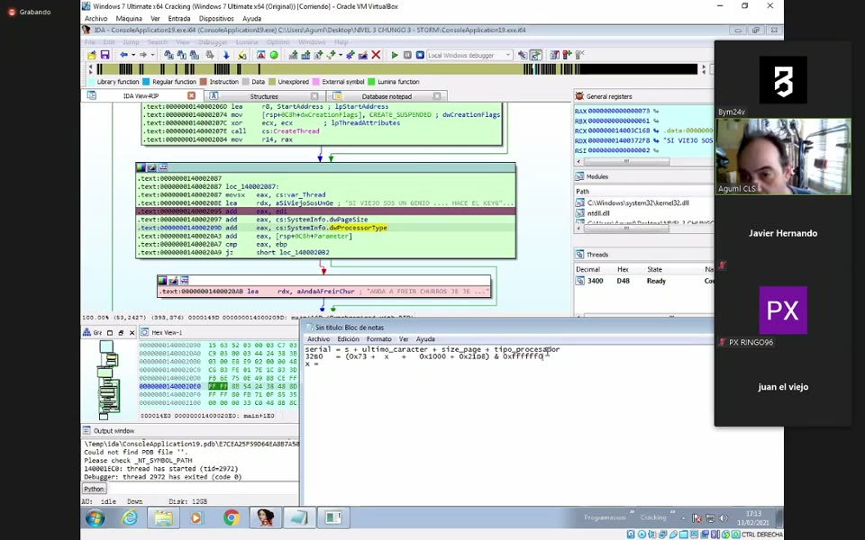
no me acuerdo yo como era esto es que el truco está en las dos letras que suma claro tú pues mira cualquier letra aunque sea la D tú dices que es la D ¿vale? me tiene que dar 32 de 4 o lo vamos a hacer con la calculadora y vas a ver como no me va a dar nunca eso aunque le aumente el parámetro ese creo que me ha faltado por sumarlo ese va aquí también vale vamos a poner vale tenemos 0,73 más el 1000 más 21 de 8 y vamos a poner parámetro 1 vale y ahora tenemos que sumar una letra por ejemplo la D la D era 64 65 creo que no me acuerdo 64 más 64 vale te da 32 de 0 pero es que hay con lo que te compara con 32 de 4 no te lo compara con 32 de 0 no 32 de 0 E B B es el es el que te da siempre la verdad que es ese vale y E ahí es el que te da a ti con la suma de las letras y todo no te estás confundiendo lo vas a ver que no no la verdad que sí o sea mira a ver lo que vimos nosotros es que variaba el EAX cuando sumamos el 1 EAX variaba 1 1 esa es la verdad iba subiendo a 1 vamos a poner un brass point lo vamos a poner desde el principio y lo vas a ver claro si te vas a decir pon un brass point y así salimos de dudas ¿cuánto es el decimal? espérate que no me lo sé decima 12 9 86 1 86 dale 86 ahí bueno pero eso es mira a ver le vamos a sumar para no tener que meterlo un pelo vale 32 es 0 si lo paso
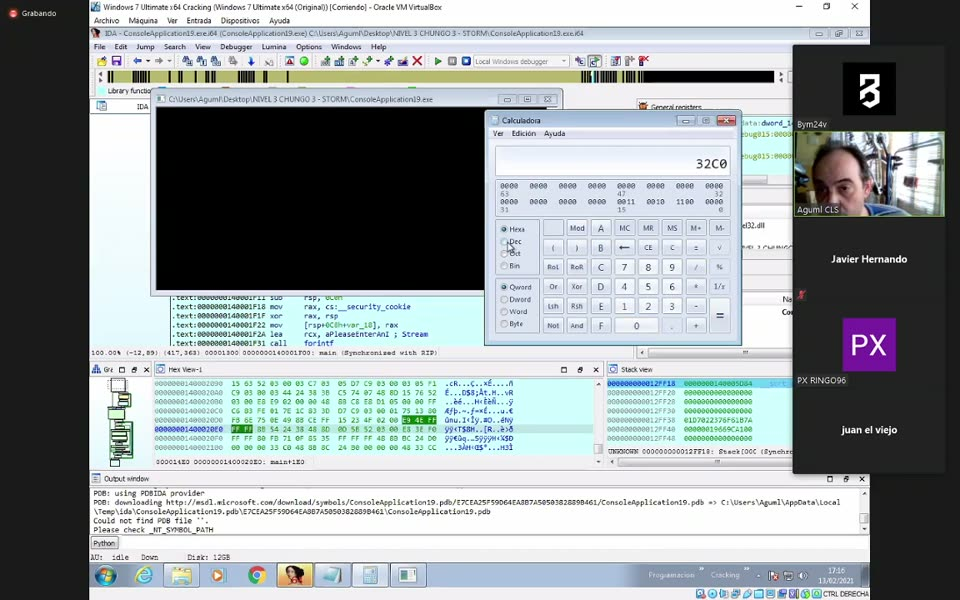
no ¿cómo lo has puesto tú entonces? espérate dime el número 12 9 86 9 86 vale 32 BA 12 9 86 si pero eso no está corriendo no pero ese no ese 32 BA no va tiene que finalizar en 0 para que pueda funcionar claro el carro va a bajar a ver ponle eso dale ahora ponle yo me vengo aquí ahora aquí tengo el número 32 BA vale ahora esa línea me queda 32 B 0 vale ahora mismo el número que yo metío es 32 B 0 vale si ahora dale rum ahora entra S A yo S A no no la A no A H H H H H N D D D vale enter vale detenido ahora por esto es en el hilo vale le doy a play venga ¿ahora qué meto? la H la H vale ahora ve traseando 32 B 4 32 B 0 siempre va a ser tuyo 32 B 0 porque la ha hecho yo entiendo lo que dice lo que teníamos que meter es un número que sea 32 C 0 porque cuando la hayan Claro, mira, ¿verdad? Y al sumar llega ese número. A ver, 32. C, 0. ¿Verdad? 12,992. Vale. Voy a quitarlo para que me lo ponga aquí porque me lo hemos hecho. ¿Cuánto era? 12,992. Y ahora yo el valor que tengo aquí es 32, C, 0.
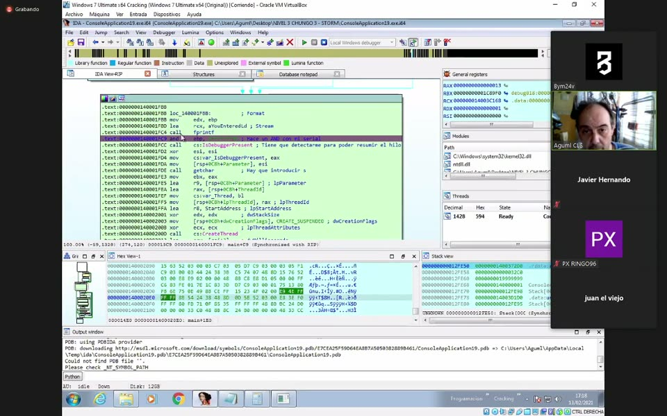
Cuando le haga LAN no va a varía nunca. 32, C, 0. Porque no me cambia el último carácter así. ¿Vale? Ahora. S, cualquier carácter. La N, yo la vamos a dar. Vale. Crea el I, no. Me está pidiendo otro carácter. Y ahora... ¿Qué carácter le meto yo a esto? Yo qué sé. La A, por ejemplo. Espérate. Espérate. ¿Vale? Entonces ahora... Si me vengo aquí, tengo 32 AD, 32 C, 0. ¿Vale? Este es el mío. Este es el mío. El que ha calculado con el mío. Y este... No, mentira. Este, el 32 C, 0 es el que yo he metido. Y este es el que va a ir calculando. Lo que pasa es que esto me puedo pegar aquí. Bueno, ahora lo que hay es que ir sumando. O sea, la tranquilidad que tenía yo, era que ir sumando hasta que llegara. Vamos a hacer una prueba. Como ya sé que eso va a ir así. Ahora vamos a poner HN, HN, HN, HN, HN, HN, HN, HN, HN, HN, HN, HN. Vamos a ver. ¿Cuánto ponía AD? Valía AD, ¿no? Creo que era. Ahora va a tener que valer bastante más. Vamos a parar una poca de beso. Si nos fijamos ahora... Pues ya no ha llegado, pero vamos, si nos fijamos, va BA. Ya vale más. Si le damos... B4. Este no varía, porque este es el mío. Ese no varía. BA. B4. Está todo el rato igual. Claro. Ese es el que te da siempre.
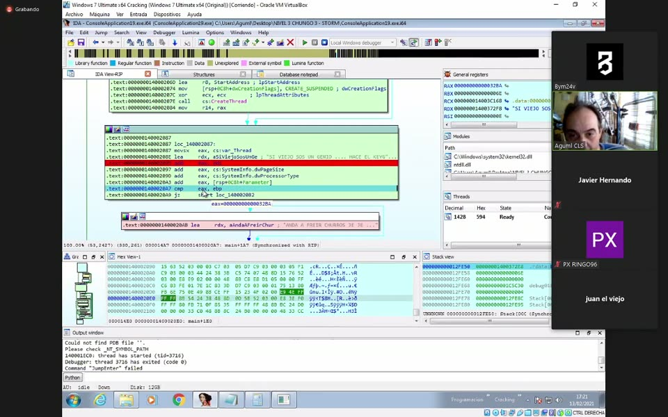
Espera. B4. Vale. Vamos a meter la N. Y a ver qué es lo que da ahora. Es que yo lo solucioné de otra manera, la verdad. Después Ricardo me dijo lo de... Ah, es que no me había creado el hilo. Ahora me lo está incrementando. Ahí está. Ahora sí me lo está incrementando. Vamos a meter ahora la H. Volvimos. Volvimos. Ahí está. C4. ¿Lo ha visto? Volví. ¿Qué pasó? No salió todavía. Nada me he pasado y todo. Está pasado, ya te digo. Está mostrando a Angur su solución. Es incrementando el contador, esa es una manera, ¿vale? Y ahora sabemos que 32C0 cumple la condición, ¿no? Pues ahora en vez de aquí eso, vamos a poner 32C0. ¿Vale? Y vamos a hacer la cuenta. Vamos a despejar X. De LAN ya me olvido porque ya está puesto a cero el último carácter. No me vale para nada. Ya eso es. ¿Vale? La X la ponemos aquí. Y ahora lo que hago es... Este pasaría restando. Y lo que hago, como la N pasaría restando, pues lo que hago es invertir todos los símbolos y ya está. O sea, pongo el 32C0 menos 0X73 menos 0X1000 menos 0X8. Y el parámetro vamos a poner que valga 1. Que es el primero que tiene que valer. Ya comí, ahora tengo pila, ¿viste? Si no, no tengo pila. Ahí está, voy a poner el video. Me dice que el carácter es 74. 74, ¿qué carácter? Yo no tengo ni idea. ¿Repitiéndolo ya lo hicieron? Repitiéndolo, sí. 7X es igual a 0X74. Repitiéndolo así, ¿ya lo hicieron? Repitiéndolo varias veces con el...
Sí, pero me he pasado esto, Ricardo. ¿Por qué? Porque he metido todos los carácteres. He puesto HN, HN, HN, todo junto. Le he dado al intro. Y lo que ha hecho es pasar todos los GEDs y luego ha incrementado todos los parámetros. Entonces, cuando ya ha llegado, se ha pasado y todo. Ah, va. Es medio maldito. Sí, pues. Hay que ir poco a poco. No puede meterlo todo de golpe. Porque si no, no se sintió ni salido. Claro. Vale. ¿74 que le trae? ¿Solo puedo back ir, Ricardo? Sí. Si tenés Ida Python, vas a tener que verlo en Python, en Ipython. Sí, pero el resultado te lo muestra en Ipython, ¿eh? Si tenés Ipython, no te lo muestra ahí. Tenés que hacer Ipython para verlo. Ese es uno de los side effects de usar Ida Python, ¿no? Que los resultados de la barra te los muestra en Ida Python. Tenés que poner Ipython y ahí ves. Y ahí, hacerlos ahí. O si lo haces abajo, te lo va a mostrar ahí, creo. Pero bueno. La T me dice que... Bueno, vamos a intentarlo, a ver. Este chungo es bastante chungo. ¿Soli se fue a morfar? Sí, eso dijo. Sí, ya hasta ahora estamos acá a la hora de la comida. Una y media. No importa. Lo que tiene es que de una máquina a la otra los números cambian, porque son distintos. En el mío no cambiaba con el de ellos. Ah, porque tiene el mismo procesador y justo da la casualidad que usa el mismo procesador. Oh, sí. Pero el de CPYD, el otro, sí. El de CPYD, ese va a cambiar. El del nivel básico. Ese no van a tener el mismo CPYD. Ahora se supone que es la T. No sé, porque a mí la otra vez no me dio la T, pero bueno.
Voy a probar. Espera la T. 22 es 0. 22 es 0. Ahí está. Muy bien. Vale. Esa es una manera y la otra era incrementando el contador. Y agataba otro número diferente. La T, ¿no? Que la otra vez no lo pusiste, ¿no? Sí, porque varía, varía con respecto a, al número que tú le metas, ¿vale? Si tú le metes, a lo mejor ahora me ha cogido otro lado de procesador, este pasaje, no lo sé. Ay, incrementando la T sería lo mismo que se estaría sumando, sino que al incrementar la T, tendría que hacer el libro, resumir, hacer el libro, resumir, para que se vaya incrementando el parámetro. Claro, en vez de incrementar la T es como incrementar el parámetro. Si en vez de la T meto, ¿qué te digo yo? La H, pues me va a dar un número más pequeño. Si meto la T me va a dar un número más grande. Esto depende, claro, de la última que escriba. Ahí está. Entonces yo para eso me hice hasta un case. A ver si... Claro, la A es 41, bueno, la A es 61 en la minúscula. Y luego, claro, la T es el 73. O sea, cada uno tiene su 74, ¿qué diga? Cada uno tiene su valor esa decima. Yo me hice un pequeño case. A ver. Qué computadora llena de cosas de... Todo de revertir, ¿eh? Todo de eso, todo de eso. No hay nada que... Mi mujer me vino en una de las juntadas, me dice, a ver si me va a venir el FBI a mi casa. Digo, no te preocupes que... A ver, chingo 3. Vale. Vale.
Se curro hasta los módulos y todo, ¿eh? ¿Te das cuenta? ¿Te das cuenta? Funciones chungo 3. Sí. Import, Gesseria, Random Letter, Print Register... O sea, ¿es que has hecho un módulo nativo en C++ o directamente la WinAPi para el módulo de Python? Claro, no, porque creo que lo separé, ahora lo muestro también. Creo que lo separé en otro archivo porque como estoy aprendiendo un poco de Python, o estoy haciendo funciones y demás, y digo, lo voy a meter en un módulo a ver. Bueno, me he volvido como no lo hice. Sí, y otras veces he hecho módulos de Python, pero he escrito en C++. O sea, digamos que mete el intérprete de Python dentro de un módulo de C++ y es bastante más... Bueno, es que es lo que es Win32, David. Entonces son módulos en C++, pero los puedes manejar desde Python en un binding. Lo que tiene Win32 API con respecto a C-Types es que C-Types tienes que pelear con todos los tipos. En cambio, Win32 API es más... Te devuelve todo. Te devuelve todo así, fácil, digamos. El C-Type es más nativo, claro. Es más... Vamos a abrir el archivo de la función. Aquí está. Vamos a ver cómo hacerlo. Bueno. Nada, no, abre el texto. A ver, lo que yo hago aquí es la función es esta. A ver si la ves. Hago un poco de fuerza bruta, es lo que hago. A ver. Lo primero que hago es obtener la información con G-System info, ¿vale? Y aquí, esto en verdad lo que hice fue complicarme un poco la vida para que se viera más clarito, porque lo que hago es crear un diccionario y le pongo nombre a dos entradas del diccionario para saber qué es realmente lo que estoy haciendo, ¿vale? Pero que esto no hace falta, que podría haber sumado directamente SF1 y SF6. Si te gusta ver así, tenés que usar C-Type, porque en C-Type podés importar la estructura. La estructura esa es LP-System info y usar los campos directamente.
Entonces, ya los usás directamente de la estructura como si fuera en C. Claro, pero aquí si te fijas tú, aquí ahora yo cojo y sumo. Sí, sí, sí, sí. No, pero te digo, si lo querés hacer más tipo C, y te gusta más usarlo así, usa C-Type en vez de Win32Zapy. Porque ahí tenés todos los tipos y podés poner la estructura y ponés el nombre, el punto, y te sale ya directamente el nombre de cada campo. Eso es. Entonces, yo lo que hago aquí es que... A ver. No se me acuerdo. Vale, esto era para... Obtengo los datos del procesador y del tamaño de la página. Y ahora le sumo el carácter S. Esta es la S. Por ahí tiene que andar. Sí, ahí arriba. La S. Le sumo el tamaño de página, que era 0x1000. Le sumo el procesador, el tipo de procesador. Y le sumo el contador, que lo tengo como 1. Porque como se supone que lo va a aceptar la primera... Que serían los parámetros, ¿no? Claro. Esto no cambia. Esto siempre van a ser fijos. Bueno, el contador no tiene por qué ser fijo, pero yo lo pongo como fijo. Y ahora me creé una función que lo que hace es meterle esa suma y la estructura está en el diccionario del registro. Ahora si nos vamos a esa función, que sería... Lo que hago aquí es... Lo que hago es... Con esto lo que hago es... Cojo todos los caracteres de letra, todos los números y todos los signos de puntuación y los barajo para desordenarlo. Es un poquito como... Como randomizar para coger un carácter al azar. Y ahora lo que hago es... Con esa cadena que me queda... Que son todos los caracteres desordenados... Un bucle... Y voy sumándole... El carácter que obtengo... De esa cadena... Y la suma... Y el que le haga el... El and... Y me dé lo mismo que el serial... Ese es el bueno. Así es como obtengo yo el carácter. ¿Vale? Una vez que tengo el carácter... A ver cómo lo explico. O sea... Le sumo...
El serial le sumo... El carácter... Y la suma. ¿Vale? Y me da el serial. Ahora... A ese serial... Si yo le hago el and... Y me da lo mismo que el serial... Quiere decir que ese serial acaba en cero. Por lo tanto es un serial que me puede valer. Y... Entonces lo que hago es... ¿Cómo se dice esto? Le retorno el serial y el carácter... De la función lo retorno al... Al proceso. ¿Qué es esto? Muy bien. ¿Vale? Entonces aquí ahora... Me queda que... Tengo el carácter aleatorio aquí. ¿Vale? Y lo que hago es obtener un carácter aleatorio. ¿Por qué? Porque el segundo carácter que tú metes... Ese da igual lo que sea. No... Vamos aquí podría haber puesto yo cualquier carácter... Y ya está. Pero como estoy aprendiendo pues estoy... Haciendo cosas nuevas. Claro, es la idea. Porque aquí he creado... Felicitaciones. Muy bueno. Pues sí. Y aquí ahora... Me da seriales diferentes si te fijas. Aquí me da 960... 992... Me va dando... Solo hay 6. Para mí solo hay 6. ¿Ves? Con la... Con el 4... Con la T mayúscula... Con la T minúscula... Se autocompensa el serial con el carácter. Exacto. Lo que hago es buscar un serial... Que al sumarle la letra... Acabe en cero. En esa decimada, vamos. Si acaba en cero... Quiere decir que esa letra me vale. Y el serial también. Hay un poco de fuerza bruta... Pero como... Como ha quedado un poco guapo... Porque... Porque son muy poquitas letras... No hay problema. Felicitaciones. Muy bueno. Muy bueno. ¿Cómo pasó la pantalla ahora? No, ahora tenés que hacer el otro. El básico 1. Ah, ya está. Tenés que hacer eso. El básico 1. Lo he pasado al chat. Ese falle. Lo he pasado al chat aquí... De la llamada. Si no en el baúl... También lo podés. A mí me echaron la llamada. Espérate que yo no controlo esto. Ese es fácil. Abajo en la barra... Te sale el chat. Y el chat. Si no, si quieren... Lo dejamos para la semana que viene. Como quieran. Eso... Igual es fácil. ¿Cómo veo yo el chat? Una comparación. Donde dice... Abajo de todo dice participantes, chat.
Donde al lado de share screen. Te compartí pantalla, dice chat. Donde compartí la pantalla. Yo lo veo en un archivo aquí. Yo no sé esto cómo va. ¿Este es? No, ese no es. Y no pasalo a CrackLatino. Pasalo a Tele. Espera un momento. Lo paso a CrackLatino. Lo bajo del baúl. Pasalo a Tele, mira esto. Supone que ya se va a bajar. Vale. Baja. Paso ya. Ahora eso se habrá bajado a descargar, ¿no? Supongo. Muy bien. Sí, en el Telegram pone... Lo pasado ahí. Ahí está. Ahí se pone en sí para mostrar en carpeta. Ya te lo voy a mostrar directamente. Nivel Basic 1. Nivel Básico 1. Ese. Sí, sí, está ahí. Ese. ¿Cómo se está cayendo a pedazos? Bueno, a nadie le gusta el fútbol. No sé. ¿Cómo se está cayendo a pedazos el Liverpool? Está perdiendo todos los partidos. Iba ganando 1-0, perdió 3-1 hoy. Todo el partido. Y eso que venía bien. Y ahora últimamente pierde todos los partidos. ¿Cómo cambia el fútbol? Terrible. Ese es fácil. Ese es nivel 1. Ese no tiene ninguna trampa. No tiene nada. Es una pavada. Lo único que tiene es que cambia de máquina en máquina porque tiene el CPUID. Nada más. Pero después no. No es para tanto. No, no. Me le dan mucho a la cierta. Chao. Ok. Ahí. Vamos. Vamos a ver. Vamos a ver. No me deja. Este no tiene trampa. Este es bueno. Más bueno que el ASI medicado.
Ahora me pide un serial. Se ve lindo. Se ve comparado con el chungo, con el choteado y todo eso. Se ve. Esto se ve hermoso. Se ve hermoso. Es fácil. Me pide el nombre. Me pide el serial. Eso te refiero. No me acuerdo yo creo que así. Sí. Busca la N. Esa. Te dice la posición de la N. De la barra N. Ah, vale. Donde termina. Y te dice, si la posición es 14, quiere decir que no está. O sea, que no encontró el barra N hasta el 14. O sea, si no encuentro el barra N te da el máximo. Claro, porque el bufe que tengo creo que es... Por eso es 20. 20 decimales. Por eso. Por eso no influye eso. Ahí te falta un pedazo salió. Un pedazo no salió. ¿Qué pasó? Algo no salió ahí. Bueno, aquí lo que hace es que coge el nombre. El nombre este, ¿no? Ahí ese nombre no sé qué hace ahí, pero bueno. Vamos a trasear a ver si sale el pedazo. Pero vamos, yo lo que creo es que coge el... Lo que está haciendo es recorrer el nombre. ¿No? Esto tiene una parte que llama CPU ID. Pero yo no la veo ahí. ¿La ven más abajo? Más abajo estará. A la función CPU ID. Más abajo. Debe estar más abajo. Eso debe ser el string length. Ah, ahí está. CPU ID. Eso debe ser string length. Eso que está ahí, eso que recorre el nombre, debe ser el largo. Seguramente eso debe ser... El compilador debe ser que hace un string length. Para sacar el largo. Eso que da vuelta. Y no es nada del otro mundo. Viste que el compilador a veces no te usa la función string length y llama, usa...
Te lo calcula él, te va calculando cuánto es el largo. Es el largo. Si no es cero, se puede repetir hasta que... El largo no sea cero, vamos. Aunque sea mayor que dos. Bueno, es cuando no es cero, pero cuando sale, si es mayor que dos, se fija si es mayor que dos. ahora sí, ahora aquí si me lo compara con 2 si no se va afuera ya está comparando está comparando los punteros o sea, está retando los punteros y ya tiene largo con los punteros si no es menos de 2 fuera y si no es menos de 2 pasa el puntero de ese ya aquí si es lo mismo, lo compara con 2 si es lo mismo, le sumo 1 al principio para hacer la resta eso es el largo acá viene la parada, ahí puede poner un break al principio y listo una pregunta Ricardo el CPUID no se usa también como medida de antidebuje no, en el sentido te da datos de la máquina, del procesador de la máquina, o sea, personales yo recuerdo que había uno que lo que te daba era por eso no, el tiempo no, ese es otro pero este CPUID, este lo que es, es el ID el otro es otra cosa el otro era, no era ese era HWD ya ni me acuerdo pero bueno, no es este este CPUID es el ID del CPU te lo devuelve NAE que esos valores que guarda ahí que lo va sumando son valores del de tu máquina ves, eso que va sumando el resultado es un valor de tu máquina del procesador ves, EBX, EDX lo va sumando eso va a dar una constante tampoco es que va a ser la muerte y después vuelve a llamar y lo vuelve a lo vuelve a seguir sumando ojo uno suma y otro sorea bueno, hay que hacer la cuenta uno suma y otro sorea el resultado con EDX igual va a dar un número igual va a ir sumando o sea, va a ir va a dar un número todo eso ese resuelve a dar un número para tu máquina bueno, listo
y ahí está ahí está el serial este es fácil yo le dije este es bueno este es buenito como el ASI ah, lo pasa a ASCII a String el número sí, pero y ahora lo va a comparar mi serial con mi nombre compárese va a tener que devolver en alguna variable ahora ese se supone que es el serial ahí está comparando si no, te va a tirar con el AX compara compara byte a byte claro, mi nombre es lo que está comparando con la sumatoria de todo eso ese X no era la sumatoria de todo mi serial ¿de dónde sale mi serial? de mi serial ¿de dónde sale? de algún lado tiene que salir ponerle la referencia con X o sea, ha hecho los cálculos eso de ah, y lo guardo ahí con los cálculos que ha hecho de ah, sí, lo guardo lo guardo lo guardo en el ha pasado pero en el serial y yo creo que lo que ha hecho es sumarle sumarle a mi serial eso porque ha pasado mi serial a enteros claro no, no lo que ha hecho pero bueno esto ya lo podría registrar a ese nombre sí, no es nada difícil hay que fijarse por eso dije nivel 1 este no tiene maldad no busquen la maldad donde no hay poné un break poné la comparación por si acaso ahí, ahí, ahí, ahí, ahí
vení a ver el cpu y de hecho donde retorna el valor Ricardo porque yo no lo veo que son todos estos EBX, FX y EDX sí, sí pero los que yo uso no son todos sí, uso EAX uso alguno EBX y EAX de dónde saca el 50 eso hay que ver puede ser puede ser que tenga un valor inicial Resul hay que ver dónde está dónde está Resul inicialmente ve que ahí tiene un valor inicial 45 45 o sea que ya empieza con un valor bueno ahora mismo me tendría que dar igual DB 64 64 no sé que sí yo creo que sí que sí que hay una de las dos cosas que vos metés que no la usa el 98 28 28 28 no lo usó o sea el el nombre es lo que no usa el nombre es con lo que compara sí hay una de dos entradas bueno y ya está
ahí debe ir a la parte buena si tenés que sacar el break si no te va a parar en cada carácter porque va carácter por carácter ya debe estar listo este es para nivel 1 para los que recién empiezan no esperen maldades este es bueno buenito pero esto no se podría entonces meter cualquier nombre no Ricardo no no puede crear un serial para tu nombre no no depende de la máquina bueno habría que ver qué valor claro tendría que jugar un poco con el serial y ver si se puede bueno pero en ningún momento para hacer la cuenta usa el 98 98 98 claro es que lo que usa son solo los datos de la CPU por eso los datos de la CPU y lo compara con el nombre o sea que lo único que vos podés hacer para hacer un keygen es sacarle llamar a CPUID de alguna forma ponerle de Python que se puede y y sacar esos valores y usarlo que se yo no sé es una posibilidad bueno listo por lo menos ya está por lo menos ya hicimos todos va queda el empacado el petit ese que alguien se anima con los empacados muy bien como como salgo de aquí como paso otra vez bueno cerramos ya ya vamos cerrando porque ya como tres horas que estamos yo llevo dos horas y treinta minutos de vídeo por eso ya la pasamos muy bien la pasamos muy bien pero bueno el participante si lo hacemos todo hoy no tenemos más para para las siguientes para pasar salir de ahí lo que tenés que hacer es pasar el host a otro levantarse de la silla y salir corriendo porque yo eso no lo veo por aquí a ver abajo en participante donde dice participante donde dice participante selecciona a la persona y pone más donde dice más participante selecciona a alguien a BIM ponele y ponele hacer más donde dice más hacer participante como que dice hacer host o no sé como mierda si bueno pero si lo dejamos aquí ya cerrándolo si cerramos
ya cerramos todo ya termina bueno gente lo he pasado lo pasamos bien la verdad que no le gusta más hacer las juntadas así entre todos que practiquemos que hagamos que lo hagamos nosotros lo mismo que nada esto va muy bien por eso me parece muy bien me parece mejor que lo hagamos entre todos que lo hagamos nosotros porque si lo hacemos nosotros es lo mismo que lo hagamos en un video que lo hagamos en una juntada es lo mismo la hora es buenísima la hora mejor también porque es más temprano y bueno bueno nos vemos en cualquier momento lo termino de grabar ya stop grabando stop recording bueno nos vemos chao muy bien chao gente hasta la próxima gracias por estar y por ser tan público acá público fiel chao chao Gracias. Yo. Gracias. Gracias. Gracias.
Gracias. Gracias. Gracias. Gracias. Gracias.